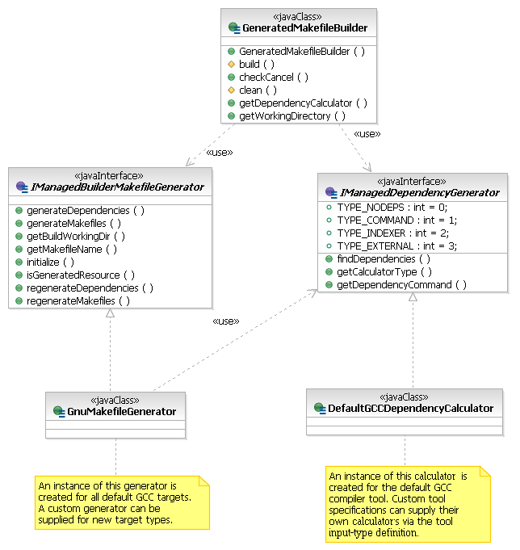

This document describes the design of the managed build system and how to extend it.

| Managed Build
System Extensibility Document This document describes the design of the managed build system and how to extend it. |
|
| Authors | Sean Evoy |
| Leo Treggiari | |
| Mikhail Sennikovsky | |
| Chris Recoskie | |
| Revision Date | 10/21/2003 - Version: 0.1.0 |
| 09/10/2004 - Version: 2.0.0 | |
| 11/08/2004 - Version: 2.1.0 | |
| 8/10/2005 - Version 3.0.0 | |
| 9/28/2005 - Version 3.0.1 | |
| 05/09/06 - Version 3.1 | |
| 06/22/07 - Version 4.0 | |
| 02/23/11 - Version 4.0.1 | |
| Change History | 0.1.0 - Document Creation |
| 2.0.0 - Updated for CDT 2.0 | |
| 2.1.0 - Updated for CDT 2.1 | |
| 3.0 - Updated for CDT 3.0 | |
| 3.0.1 - Updated for CDT 3.0.1 | |
| 3.1 - Updated for CDT 3.1 | |
| 4.0 - Added link to "what's new in 4.0" document | |
| 4.0.1 - Added Option/Category Enablement as of CDT 8.0 |
NOTE: the document describes the CDT Managed Build System (MBS) 3.x functionality. Although there have been lots of significant changes made to the Build System in the 4.0, the document still remains valid since all the 4.0 build system changes were made by extending the MBS functionality described in this document. As of CDT 8.0, MBS 4.0 is still used although with a number of improvements not necessarily reflected in this document.
Please refer to the "What's new in the CDT Build System 4.0" document for the list and description of additional new functionality presented in CDT 4.0
C and C++ developers are a diverse group. The tools they use, the processes they follow, and the level of support they expect from their development environments vary widely. The CDT provides a framework for integrating those tools into Eclipse and the managed build system is part of that framework. Understanding how the managed build system works, and what steps are required to extend it is the focus of this document.
Much of the text in this document is taken from the managed build system (MBS) design documents that are contained in the Eclipse Bugzilla data base. The authors of these documents include Mikhail Sennikovsky, Bob Monteleone, Sunil Davasam, Chris Recoskie, Lars Kurth, and Bala Torati. These design documents are a source of additional information regarding particular MBS functionality. Note that these documents are not necessarily kept up to date after the initial design, where-as this document attempts to be up to date. Here is a list of some of the documents:
1.1 Who Needs This Information
The information in this document describes the design of the managed
build system and discusses how to add new tool-chain definitions to it
through the buildDefinitions extension point. It is
intended for someone
who wants to understand how the managed build system works, or is
interested in adding their own tool-chain specification to it.
The CDT managed build system comes configured to generate Gnu makefiles to build executables, static libraries, and shared libraries using the Gnu compiler collection (GCC). If you have access to GCC tools on your platform and find the predefined project-types sufficient for your needs, then you do not need to modify anything. Please feel free to skip sections 3, 6, 7 and 8, as they are primarily concerned with adding new tool integrations to the build model.
If you are working with tools other than GCC, or you wish to create project-types that CDT does not support out of the box, you can add a description of your project-type/toolchain and make the CDT pick up the information you provide with your definitions. With the CDT 4.0 you can do this for both cases whether you are willing the CDT to automatically generate makefiles for your project or not.
If you choose to add your own tools to the managed build system, it is assumed that you are familiar with XML and the Eclipse extension point mechanism. Having made the standard disclaimer, it should be said that the tutorial in § 6 presents a cookbook approach to adding a new tool specification, so you can always jump right in and refer to the online help in the Platform Plug-in Developer Guide if you get stuck.
1.2 Managed Build System Overview
The managed build system consists of several components that interact to build a project. At the core of the managed build system is the build model. It is the central clearing house for all the build-related information that internal and external clients require. There are three internal clients; the user interface components, a build file generator that is responsible for generating correct build files for a project when it is built, and the built-in parser supplied with the CDT. The external clients are the end-user, who interacts with the build model through the user interface, and tool integrators who supply tool definitions to the build model. The diagram below shows the basic set of relationships between these components.
1.2.1 External Users
From the perspective of the build system, there are two external users. The first is the end-user who interacts with it through the UI elements described in § 5. The UI includes a new project wizard that relies on the build system to tell it what kinds of new projects can be created. When the project has been created, the project property page uses the information in the build system to populate its display. The user can change the information associated with the tools for a project through the property page and the build system is responsible for saving those changes between sessions. The second external user is the tool integrator who adds information about their tool-chain to a plug-in manifest as described in the tutorial in § 6. The tool integrator is the primary audience for this document.
1.2.2 Internal Users
There are three internal clients of the information in the managed build system. The first is the build file generator that creates correct build files for a project based on the tools and settings defined for the project in the build system. The second is the built-in CDT parser that relies on the build system to tell it about the include paths and defined preprocessor symbols for a given project so that it can properly construct an internal representation of the compilation unit the file belongs to. The third client is the UI component of the build system that queries the build model for the tools and options defined for a project to build its display and store the user settings.
1.2.3 Built-in Compiler Settings
Every compiler relies on having a correct set of preprocessor symbols and header file search paths to perform proper builds. Even compilers from the same vendor may use different symbols and search paths when building for different operating systems. Some of these values may be defined by the user, but others will be built into the tools themselves so the user will be unaware of them. The CDT parser described in the previous section needs to know about the entire set to properly parse source files. It is the responsibility of the MBS to answer both the user-supplied and built-in paths and symbols to the parser. Of the two, the user-supplied include paths and defines are trivial as they are entered by the user through the UI. The built-in compiler settings on the other hand, are quite a bit harder to decipher and the solution will vary from tool to tool. A discussion of the possible solutions is provided in § 6.12.1.2.4 Tool Definitions and Settings Storage
A key feature of the managed build system is that it is extensible. Tool integrators can use the grammar, described in § 3, to add their own tools to the build system. The same grammar is used to save the settings that the user overrides through the UI between sessions, in the project's .cdtbuild file.There is also a standard build system supplied as part of the CDT framework that is unrelated to the managed build system. The standard system provides a small set of tools to build a user’s projects. The user is expected to supply a makefile which includes enough information to build their project. The UI allows the user to switch between targets defined in the makefile, and can dynamically discover build settings at run-time to allow the parser to function correctly.
The decision to use the standard or managed build system is a trade-off. For users with an existing project that already has a set of working makefiles, or for users that prefer (or need) to write their own makefiles, the standard system may be perfect. However, many users find writing and maintaining makefiles for projects to be a chore. For these users, the trade-off for the convenience of not having to maintain them is the flexibility of being in control of the makefiles.
2 User Model
The CDT user’s model of the MBS contains the following primary objects:
|
Project Type |
A tool-integrator-defined class of project which acts as a template for the projects that a user will create. The template specifies one or more default configurations, and can optionally provide code generation capability to create an initial set of input resources for the project. The template can also present various options in Wizard Pages that allow the user to further customize the project. |
|
Project |
A user-defined instance of a particular project type along with a set of user specified input resources and configurations. |
|
Configuration |
A particular tool-chain (possibly customized with additional or different tools), a set of options for those tools, and other information which define a unique way to build a project. Examples include building a project for debugging, building a project for release, or building a project for a different target platform. |
|
Tool-chain |
An ordered set of tools used to transform the project resources into the final output (build artifacts) of the project. A tool integrator can provide a family of tool-chains that support different host/target platform combinations, and different versions of the tool-chain. |
|
Tool |
A utility of some sort that is used in the build process. A tool will generally process one or more resources to produce output resources. Most tools have a set of options that can be used to modify the behavior of the tool. |
|
Option |
An individual control that the user can set to modify the behavior of a tool. |
|
Option Category |
A named set of options used for grouping similar options together in a hierarchy. |
The following sections describe how the user interacts with MBS. Text in red indicates MBS functionality that is not yet implemented, but is intended to be implemented in future releases of MBS.
The CDT user’s experience with the MBS begins when she creates a new Managed Make project. The user picks the type of project to create from the list of project types defined in the installed manifest files. The list of project types is, by default, filtered by:
· The project type must contain at least one default configuration that uses a tool-chain that supports the host operating system and architecture.
· If the project type implements the method of verifying that its support has been installed, the method must return TRUE.
· The user may remove installed and possibly-installed (i.e. the project type does NOT implement the method of verifying that its support has been installed) project types from future consideration by turning them off in the MBS Preferences page.
The user may turn off project type filtering, however configurations that use tool-chains that are not installed will not be able to be built on the host system.
After selecting the project type, the user selects 1 … n configurations for her new project from the list of configurations defined in the project type. Different configurations can use different tool-chains. The list of configurations is, by default, filtered by:
· The tool-chain used by the configuration must support the host operating system and architecture.
· If the tool-chain implements the method of verifying that its support has been installed, the method must return TRUE.
The user may turn off configuration filtering, however configurations that use tool-chains that are not installed will not be able to be built on the host system.
After selecting the initial set of configurations for the project, the user can select any of the standard tabs in the “Additional Project Settings” page in order to customize additional options that are common to all Managed Build system projects (e.g., the projects that the new project depends upon, etc.).
The user can proceed to any additional pages provided by the project type in order to customize project type specific options. For example, these additional options can result in generating initial code for the project and/or setting tool options that are different from the project type defaults.
After creating the new project, the user can use any of the Eclipse methods of adding files to the project.
The user can create a new configuration based upon the settings used by one of the existing configurations. The user can select a different tool-chain from the project type if desired. This allows a project type to be defined (e.g., “Gnu Executable”) that contains tool-chains for multiple combinations of host and target platforms, and/or for multiple versions of a tool-chain. It should be easy for a user to take an existing CDT project to a different host system and quickly create a configuration that builds on that host system using a version of the tool-chain that supports the new host.
The user can also pick 1 … n configurations from the list of default configurations defined in the project type. The list of configurations is, by default, filtered as specified above.
The user can select a configuration and modify the following attributes of the tool-chain:
The user can modify the options of an individual configuration, or he can make changes to a set of configurations that he has selected. The user can select a set of configurations individually or by selecting a “category” of configurations. The names of the categories are defined by the configuration provider – “debug” and “release” are commonly supported. Categories which group configurations by target platform could also be useful.
The user can modify the options of a tool used by the configuration. A tool can verify that the new value is valid and an error message will be displayed if the value is not valid. The current value of a build setting is bolded if the value if different from the default value for the tool. The user can easily set the value back to the default value without knowing what the default value is.
The user can modify certain “well known” build settings for multiple selected configurations, even when the configurations do not use the same tool-chain.
The user can use Build Macros in all options that accept text. MBS pre-defines many useful macros and allows tool integrators and the CDT user to define additional macros. Additional macros can be defined in the MBS preferences page and for individual projects or configurations. Build Macros are referenced in strings by enclosing them in braces, preceded by a dollar sign.
Tool integrators may define property setting “wizards” that modify sets of tool options in order to reach an overall user-desired goal. An example would be a “Most Highly Optimized Build” wizard that set options on multiple tools.
The user can specify different configuration specific build settings for individual files in the project. The current value of a build setting is bolded if the value is different from the value in the configuration. The user can easily set the value back to the configuration value without knowing what that value is.
The user can add or remove a Custom Build step for an individual resource. The step can execute before or after the tool assigned to the resource, or they can execute instead of the tool assigned to the resource. The user specifies the tool command line, the input dependencies of the step, and the output resources that are created by the step.
The user can mark individual files to not be used in the building of the selected configuration(s).
The user can build projects from within the Eclipse/CDT user interface, or from a command line that can be placed in a batch/script file.
The user can build the currently active configuration, or select a different set of configurations to build.
The user can rebuild an individual resource separate from building the entire project.
MBS defines a version number that is stored in every MBS project file (.cdtbuild).
When MBS reads a project file with an older version number:
When MBS reads a project file with a newer version number, it displays an error message, and does not load the MBS information. None of the MBS operations are available on the project (for example, editing build properties, cleaning, building, …).
Some of the build model elements (tool-chain, tool, or builder) can also define a version number. The version number is appended to the end of the element id, and stored by MBS with each reference to the element. MBS attempts to resolve references in the following manner:
If a match is found, there are 2 scenarios:
If no match is found, MBS displays an error message, and does not load the MBS information. None of the MBS operations are available on the project (for example, editing build properties, cleaning, building, …).
3 Build Model Grammar Elements
The managed build system defines a grammar to describe tool and build information. This information is used to store invariant data, like the command line invocation for a specific compiler, for example. The build system also stores user settings between sessions, like the level of debugging information that is needed for a particular build configuration. The following section describes the format of the grammar and what the information is used for by the build model. See the CDT 3.0 Gnu tool-chain definitions for an example of using the managed build object model.
Many of the MBS elements require the specification of the id attribute. The attribute value typically takes a form similar to Eclipse package names, e.g. "cdt.managedbuild.tool.gnu.c.linker". Each id must be unique within MBS and among all of the loaded manifest files. It is suggested that you include your company/organization name in the ids that you create.
Many of the MBS elements can specify the name attribute. The attribute value is used in the MBS user interface, and may therefore change if your tool-chain supports more than one language. You can use a plugin.properties file in order to define these strings in an external file (see the Gnu tool-chain definitions for an example).
Many of the MBS elements can specify the superClass attribute. The attribute value is the id of an element of the same type as this element. For most attributes, when the value of an attribute is not specified in an element, the value will default to the value defined by the first super-class ancestor that specifies a value for the attribute.
The figure below shows a UML model of the schema elements. It is simplified by leaving out the fact that the configuration, toolChain, tool, targetPlatform, and builder definition elements can be defined at the top level in a manifest file.

The projectType element represents the project-type in the user model. It is a tool-integrator-defined class of project which acts as a template for the projects that a user will create. The projectType contains one or more children of type configuration. These are the default configurations that the user can choose from. Note that there is no reason to define a projectType element in a .cdtbuild file. It would never be used since projectType elements are used to populate the New Project dialog boxes.
You must provide a unique identifier for the project-type in the id attribute. The build model uses this information to distinguish between the project-type definitions it finds. You must also provide a meaningful name that will be displayed to the user in the UI and new project wizards.
Project-types can be arranged into hierarchies to promote the efficient sharing of configurations. If you have defined a project-type that should not be selected by the user, but is a root for other project-types, it may be declared abstract by setting the isAbstract attribute to ‘true’. Abstract project-types do not appear in the UI. Descendents of an abstract project-type will have the same configurations that the abstract project-type has. For these children to function properly, their superClass attribute must contain the unique identifier of the super-class project-type.
A concrete project type must have at least one configuration defined for it. A configuration must define (or inherit) a set of tool-chain definitions that work together to produce the build goal as an output.
A projectType may define a project
level environment variable provider in the projectEnvironmentSupplier attribute. See §
7.6 for additional information.
A projectType may define a project
level macro provider in the projectMacroSupplier attribute. See §
7.8 for additional information.
3.2.1 Schema
|
Attribute |
Description |
Required |
|---|---|---|
|
id |
A unique identifier that the model manager will use to keep track of this specific element. |
yes |
|
name |
The name for the projectType that is displayed to the user in the UI. |
yes |
| superClass | The unique identifier of the projectType that this projectType is derived from. | no |
|
isAbstract |
Flags the projectType as abstract. An abstract projectType can not be selected by the user in the UI, but projectTypes derived from this projectType will inherit its attributes and children. The default value is false. |
no |
|
isTest |
A projectType can be flagged for test purposes only. It can be manipulated programmatically, in JUnit tests for example, but not selected by the user in the UI. The default value is false. |
no |
| projectMacro Supplier | The name of a class that implements the IProjectBuildMacroSupplier interface in order to provide project level build macros. | no |
| projectEnvironment Supplier | The name of a class that implements the IProjectEnvironmentVariableSupplier interface in order to provide project level environment variables. | no |
| configurationName Provider | The name of a class that implements the IConfigurationNameProvider interface in order to provide a default name for a configuration. The configuration names in a user's project must be unique. A projectType can contain configuration children with the same name. In this case, a configurationNameProvider must be specified to make the names unique before they are displayed to the user in the New Project and New Configuration dialog boxes. | no |
| convertToId | The identifier of a projectType, that project types loaded using this definition should be converted to. MBS will invoke a proper converter. | no |
The managedProject element represents a project instance in the .cdtbuild file. Note that there is no reason to define a project element in a manifest file – it would never be used.
The following steps occur when a CDT user creates a new Managed Build project:
This prepares the new project/configurations for modification by the user.
3.3.1 Schema
|
Attribute |
Description |
Required |
|---|---|---|
| name | The name for the managedProject that is displayed to the user in the UI. This is the name that the user entered in the New Project wizard. | yes |
| projectType | The unique identifier of the projectType that was used when creating this project. | yes |
The configuration element represents the configuration in the user model. A tool-integrator defines default configurations as children of the project type. These provide a template for the configurations added to the user’s project, which are stored in the project’s .cdtbuild file. A projectType must have at least one default configuration defined for it, and a project must always contain at least one configuration.
The configuration contains one child of type tool-chain. This describes how the project’s resources are transformed into the build artifact. The configuration is responsible for maintaining the name of the final build goal. The user selects the name of the build artifact in the UI, and the configuration maintains it in the artifactName and artifactExtension attributes. The configuration can contain one or more children of type resourceConfiguration. These describe build settings of individual resources that are different from the configuration as a whole.
Each configuration must have a unique identifier specified in the id attribute that will be used by the build model to manage the configuration. It must also have a name that will be displayed in the UI in the build property page and new project wizards. The configuration contains the information needed to “clean” the build files on the host machine. The configuration can specify the cleanCommand attribute which specifies a command that removes the build files.
The prebuildStep, preannounceBuildStep, postbuildStep and postannouncebuildStep attributes define a custom build step to be run before and/or after the the build steps defined by the tool-chain. These attributes are not typically defined in the manifest file, but are instead added by a user from the configuration properties user interface.
Additional configuration attributes are described in the schema table below.
3.4.1 Schema
| Attribute | Description | Required |
|---|---|---|
| id | A unique identifier that the model manager will use to keep track of this specific configuration. | yes |
| name | Human-readable name for the configuration to be used in the UI. | no |
| parent | The unique identifier of the configuration that this configuration is derived from. | no |
| artifactName | The name of the build goal defined by the configuration. This can be set by the user in the UI. | no |
| artifactExtension | The extension that the build goal will have, for example ‘.exe’ or ‘.so’ | in hierarchy |
| cleanCommand | The command to remove intermediary and output files on the build machine. | in hierarchy |
| errorParsers | The semi-colon separated list of the default error parsers to be used with this configuration. The list is ordered with the first error parser on the list invoked first, the second error parser second, and so on. The list may contain the error parsers defined by CDT and/or other installed error parser extensions. The list of error parsers to be used may be changed by the user on a per-configuration basis. When specified, this overrides the tool-chain errorParsers attribute. | no |
| prebuildStep | Specifies the pre-build command(s), which runs prior to the standard MBS build. | no |
| preannouncebuild Step | Specifies the post-build command(s), which runs after the standard MBS build. | no |
| postbuildStep | Specifies the string to be displayed when the pre-build command step is run. | no |
| postannouncebuild Step | Specifies the string to be displayed when the post-build command step is run. | no |
| description | Specifies the description of the configuration that will be displayed to the user while creating a project and managing configurations. The description is only displayed in the UI - it is not considered to be part of the configuration name. | no |
The toolChain element represents the tool chain in the user model. It is a tool-integrator-defined set of tools that transform the project’s input into the project’s outputs. A tool-chain can be defined as part of a configuration, or as an independent specification that is referenced in a separate configuration via the toolChain superclass attribute.
The toolChain contains one or more children of type tool. These define the tools used in the tool-chain.
The toolChain contains one child of type targetPlatform. This defines the architecture/os combination(s) where the outputs of the project can be deployed.
The toolChain contains one child of type builder. This defines the “build” or “make” utility that is used to drive the transformation of the inputs into outputs.
The tooChain may contain one or more children of type optionCategory and option. These define tool-chain wide settings that are not specific to a particular tool.
Typically a tool-chain is hosted only on a limited subset of operating system/architecture combinations. For example, it does not make much sense to allow a user to try to build a Solaris shared library project if they are running Eclipse and CDT on Windows. You can specify the operating systems and architectures that the tool-chain is supported on as a comma-separated list in the osList and archList attributes.
A tool-chain should specify the targetTool attribute to identify the tool that runs to generate the primary build output. If this is not specified, MBS uses the file extension of the build artifact name supplied by the user. This will work when the user uses one of the extensions expected by the tool, but will not work if they do not.
MBS supports multiple versions of a tool-chain. The versionsSupported attribute contains a list of supported versions of a particular tool chain. This indicates that there is no need to perform a conversion when user imports/loads a project with one of the supported tool chain versions. When a tool integrator decides to no longer support a version of a tool chain, they continue to ship the old tool chain definition and specify the id with version number of the tool chain definition to convert to in the convertToId attribute. If changes to the project information need to be performed by the conversion, the tool chain must provide a converter extension to perform the conversion. If no converter extension is provided, then there won’t be any conversion. See § 8.2 for additional information.
A tool-chain may define a
configuration level environment variable provider in the configurationEnvironmentSupplier attribute. See §
7.6 for additional information.
A tool-chain may define a
configuration
level macro provider in the configurationMacroSupplier attribute. See §
7.8 for additional information.
A tool-chain may be associated with a scanner configuration profile that defines how to discover built-in compiler defines and includes search paths.
Additional tool-chain attributes are described in the schema table below.
3.5.1 Schema
| Attribute | Description | Required |
|---|---|---|
| id | A unique identifier that the model manager will use to keep track of this specific toolChain. | yes |
| name | Human-readable name for the toolChain to be used in the UI. | no |
| superClass | The unique identifier of the toolChain that this toolChain is derived from. | no |
| isAbstract | Flags the toolChain as abstract. An abstract toolChain must be defined as a top level object in the model definition and cannot be selected by the user in the UI, but tool-chains derived from this tool-chain will inherit its attributes and children. The default value is false. | no |
| targetTool | A semi-colon separated list of the identifiers of the tools that can be used to create the build artifact. A list is required, for example, when there are 2 versions of a target tool that are used with different project natures. | yes |
| secondaryOutputs | A semi-colon separated list of the identifiers of other output types, besides the primary output of the targetTool, that are also considered to be build artifacts. The build file generator will ensure that the outputs get built. | no |
| osList |
The comma separated list of operating systems that the tool-chain is supported on. The
valid list of operating systems
is the string values returned by Platform.getOS(). If the osList attribute is not specified, or if the value is "all", then the tool-chain is supported on all operating systems. Otherwise, the tool-chain is only displayed when CDT is running on one of the specified operating systems, unless the user has turned off filtering. |
no |
| archList |
The comma separated list of architectures that the tool-chain is supported on. The
valid list of
architectures is the string values returned by Platform.getOSArch(). If the archList attribute is not specified, or if the value is "all", then the tool-chain is supported on all architectures. Otherwise, the tool-chain is only displayed when CDT is running on one of the specified architectures, unless the user has turned off filtering. |
no |
| errorParsers | The semi-colon separated list of the default error parsers to be used with this tool-chain. The list is ordered with the first error parser on the list invoked first, the second error parser second, and so on. The list may contain the error parsers defined by CDT and/or other installed error parser extensions. When specified, this overrides the tool errorParsers attributes of the tool children of the tool-chain and the builder child of the tool-chain. | no |
| configurationMacro Supplier | The name of a class that implements the IConfigurationBuildMacroSupplier interface in order to provide configuration level build macros. | no |
| configurationEnviron mentSupplier | The name of a class that implements the IConfigurationEnvironmentVariableSupplier interface in order to provide configuration level environment variables. | no |
| isToolChain Supported |
The name of a class that implements the IManagedIsToolChainSupported interface. This provides a method to be called to determine if support for the tool-chain is currently installed on the system. MBS uses this information in order to filter the choices presented to the CDT user and to inform the user when support needed by their project is not installed. If the isToolChainSupported callback is not provided by the tool-chain definition, the tool-chain is treated as supported. If all configurations defined for the given project type are not supported the project type is treated as unsupported. |
no |
| versionsSupported | Specifies a comma delimited list of versions of this tool-chain that can be loaded without invoking a converter. See § 8.2 for additional information. | no |
| convertToId | The identifier of a tool-chain, that tool-chains loaded using this definition should be converted to. MBS will invoke the proper converter. See § 8.2 for additional information. | no |
| scannerInfoCollector | REMOVED - see the scannerConfigDiscoveryProfileId attribute | no |
| scannerConfig DiscoveryProfileId | Specifies the id of a scanner configuration discovery profile for gathering the built-in compiler settings for a toolchain. | no |
| optionPathConverter |
The name of a class that implements
IOptionPathConverter. Some tools like Cygwin on Windows understand non-standard paths, e.g. "/usr/local/include"
which are not valid on the platform itself and cannot be understood by CDT's PathEntry framework.
The path converter will be called each time when a tool's include or library path settings
are evaluated for use by PathEntry and can change the given path to a platform-compatible format. |
no |
The builder element represents the utility that drives the build process (typically, but not necessarily, a variant of “make”). It defines the command needed to invoke the build utility in the command attribute. Any special flags that need to be passed to the builder are defined in the arguments attribute. The builder can specify the error parser(s) to be used to parse its output. The builder also specifies a Java class that generates the build file. MBS provides built-in gnu makefile generation.
The builder can specify a number of arguments that apply to build macros and how they interact with the build file generator.
The builder can specify the template of how to convert a build macro that contains an environment variable into the build file environment variable format by specifying the variableFormat attribute.
The builder can specify the builder internal (reserved) macro names and the macro names reserved by a build file generator (used to store the list of objects files, input files, etc.). This information will be used by the build file generator in the case where the build environment variable macros are not to be expanded in the build file. If an environment variable build macro name conflicts with the name of some reserved macro, it always gets resolved in the build file. See the reservedMacroNames and reservedMacroNameSupplier attributes below.
The builder can provide the values for the file-context build macros. To provide the value for the macro ${<macro_name>}, the macro<macro_name>Value attribute should be specified. The value of this attribute should be set to the value of the given macro. MBS will resolve the value of unsupported file-context macros to their actual macro value. In this case, a separate rule for each file will be generated when file-specific macros are used. See the gnu tool-chain for an example of setting these attributes for gnu make.
MBS supports multiple versions of a builder. The versionsSupported attribute contains a list of supported versions of a particular builder. This indicates that there is no need to perform a conversion when user imports/loads a project with one of the supported builder versions. When a tool integrator decides to no longer support a version of a builder, they continue to ship the old builder definition and specify the id with version number of the new builder to convert to in the convertToId attribute. If changes to the project information need to be performed by the conversion, the tool chain definition must provide a converter extension to perform the conversion. If no converter extension is provided, then there won’t be any conversion. See § 8.2 for additional information.
Additional builder attributes are described in the schema table below.
3.6.1 Schema
| Attribute | Description | Required |
|---|---|---|
| id | A unique identifier that the model manager will use to keep track of this specific builder. | yes |
| name | Human-readable name for the builder to be used in the UI. | no |
| superClass | The unique identifier of the builder that this builder is derived from. | no |
| isAbstract | Flags the builder as abstract. An abstract builder must be defined as a top level object in the model definition and cannot be selected by the user in the UI, but builders derived from this builder will inherit its attributes and children. The default value is false. | no |
| command | Specifies the default command to start the build utility for your toolchain. If the user changes this through the UI, the overriden value will be stored in the project build file. The build model will default to this value if the user ever resets a change. The default is "make". | no |
| arguments | Specifies the additional, default arguments that will be passed to the build utility when it is called by the builder. If the user changes the flags through the UI, the overriden value will be stored in the project build settings file. The build model will default to this value if the user ever resets a change. The default is “-k”. | no |
| errorParsers | Specifies the default list of error parsers used by the builder. These error parsers are added to this list specified by the parent tool-chain. It is an ordered, semi-colon separated list of parser IDs. The order specifies the order in which the error parsers are invoked during a build. | no |
| buildfileGenerator | The name of a class that implements IManagedBuilderMakefileGenerator. See § 7.2 for additional information. | no |
| variableFormat |
The value of this attribute should be set to the expression representing the variable format. For example, to generate macros with the ${macro} format, the attribute would contain ${=}. To generate macros with the @macro format, the attribute would contain @=. If the attribute is not specified or contains the empty string, this would mean that the builder can not treat environment variables as its own variables. In this case, the build macros that contain environment variables are resolved by MBS to their actual value. The user can also specify that build macros that contain environment variables be resolved to their actual value, as explained earlier. |
no |
| isVariableCase Sensitive | Specifies whether the builder variables are case sensitive or not. Can be set to either “true” or “false”. The default is “true”. If the builder does not support case-sensitive variables and there are some build environment variables that differ only in case (Environment variables on Unix-like operating systems are case sensitive), then those macros will always get resolved in the buildfile. | no |
| reservedMacro Names |
Comma-separated list of reserved macro names. The macro name could contain either the exact name or the java regular expression. The latter could be used to supply the pattern of variable names that are generated by MBS in case the “buildVariable” attribute of the “InputType” element is not specified, etc. If this attribute is specified and the reservedMacroNameSupplier is not specified, the following macro names will be treated as reserved: 1. a macro name that is equal to one of the names specified in the reservedMacroNames value 2. a macro name that matches one of the regexp patterns specified in the reservedMacroNames value 3. a macro name that is equal to one of the build variable names specified InputType elements of the tools used in the tool-chain If this attribute is not specified, MBS will assume that there are no reserved macro names that could conflict with the build environment variable macros, except names specified in the “buildVariable” attribute of the “InputType” elements: these names will always be treated as reserved. |
no |
| reservedMacro NameSupplier |
Should be set to the name of the class that implements the IReservedMacroNameSupplier interface. If this attribute is specified the reservedMacroNames attribute is ignored, and the following macro names will be treated as reserved: 1. macro names that the IReservedMacroNamesSupplier specifies as reserved 2. a macro name that is equal to one of the build variable names specified InputType elements in the tools used in the tool-chain. |
no |
| macroInputFile NameValue |
Represents the InputFileName macro value. The macro
specifies the input file name. The input file has the following meaning: 1. If a tool does not accept building multiple files of the primary input type with one tool invocation, the input file is the file of the primary input type being built. 2. If a tool accepts building multiple files of the primary input type with one tool invocation the input file is undefined and the macros representing the input file contain information about one of the inputs of the primary input type being built. |
no |
| macroInputFile ExtValue | Represents the InputFileExt macro value. The macro specifies the extension of the input file. | no |
| macroInputFile BaseNameValue | Represents the InputFileBaseName macro value. The macro specifies the base name of the input file. That is the file name with an extension stripped. | no |
| macroInputFile RelPathValue | Represents the InputFileRelPath macro value. The macro specifies the input file path relative to the builder current directory. | no |
| macroInputDir RelPathValue | Represents the InputDirRelPath macro value. The macro specifies the input file directory path relative to the builder current directory. | no |
| macroInputDir RelPathValue | Represents the InputDirRelPath macro value. The macro specifies the input file directory path relative to the builder current directory. | no |
| macroOutput FileNameValue |
Represents the OutputFileName macro value. The macro specifies the output
file name. The output file has the following meaning: 1. If a tool is not capable of producing multiple files of the primary output type with one tool invocation the output file is the file of the primary output type that is built with a given tool invocation. 2. If a tool is capable of producing multiple files of the primary output type with one tool invocation the output file is undefined and the macros representing the output file contain information about one of the files of the primary output type that are built with a given tool invocation. |
no |
| macroOutput FileExtValue | Represents the OutputFileExt macro value. The macro specifies the output file extension. | no |
| macroOutput FileBaseNameValue | Represents the OutputFileBaseName macro value. The macro specifies the output file base name. That is the output file name with an extension stripped. | no |
| macroOutput FileRelPathValue | Represents the OutputFileRelPath macro value. The macro specifies the output file path relative to the current builder directory. | no |
| macroOutput DirRelPathValue | Represents the OutputDirRelPath macro value. The macro specifies the output file directory path relative to the current builder directory. | no |
| versionsSupported | Specifies a comma delimited list of versions of this Builder that can be loaded without invoking a converter. See § 8.2 for additional information. | no |
| convertToId | The identifier of a Builder that Builders loaded using this definition should be converted to. MBS will invoke the proper converter. See § 8.2 for additional information. | no |
The targetPlatform element represents the os/architecture combination(s) upon which the output of a tool-chain can be deployed. The osList and archList attributes contain the Eclipse names of the operating systems and architectures described by this element.
CDT offers a facility for parsing binary files if it knows which output format the build artifact has been produced with. The binaryParser attribute must contain the id of the appropriate parser if you want build artifacts of the tool-chain to be parsed in the workspace.
3.7.1 Schema
| Attribute | Description | Required |
|---|---|---|
| id | A unique identifier that the model manager will use to keep track of this specific targetPlatform. | yes |
| name | Human-readable name for the targetPlatform to be used in the UI. | no |
| superClass | The unique identifier of the targetPlatform that this targetPlatform is derived from. | no |
| isAbstract | Flags the targetPlatform as abstract. An abstract targetPlatform must be defined as a top level object in the model definition and can not be selected by the user in the UI, but target platforms derived from this target platform will inherit its attributes and children. The default value is false. | no |
| osList | The list of operating systems that is valid for this target platform. The valid list of operating systems is the string values returned by Platform.getOS(). If the osList attribute is not specified, or if the value is "all", then the target platform supports all operating systems. | no |
| archList | The list of architectures that is valid for this target platform. The valid list of architectures is the string values returned by Platform.getOSArch(). If the archList attribute is not specified, or if the value is "all", then the target platform supports all architectures. | no |
| binaryParser | Semi-colon separated list of the ids of the appropriate parser(s) for the build artifact | no |
The tool element represents the tool in the user model. A tool must have a unique id for the build model, and a name that is displayed to a user through the UI. A tool can be defined as part of a tool-chain, or as an independent specification.
A tool may contain one or more children of type option which define the tool command line settings that can be changed by the user.
A tool may contain one or more children of type optionCategory. These are used to simplify the user’s managements of the tool‘s settings by dividing the options into a hierarchy of categories.
A tool may contain one or more children of type inputType and outputType. These define the inputs and outputs of the tool in the detail necessary for build file generation.
A tool may contain one or more children of type envVarBuildPath. These specify the names of the environment variables used by the tool for specifying the include and the library paths.
Certain tools logically belong to certain kinds of projects. For example, the Gnu compiler is invoked differently for C and C++ source files. You can specify a filter for a tool based on the nature of a project using the natureFilter attribute. When a new C project is created, a “cnature” is added to it. New C++ projects have both a “cnature” and “ccnature”. The build model interprets the filter as follows. If you specify a ‘cnature’ filter, then the tool will only be displayed if the project has a “cnature” and does not have a “ccnature”. If you specify a ‘ccnature’ filter, then the tool will be displayed if the project has a “ccnature”. The default if no filter is specified is to display the tool for all projects.
Each tool specifies a command that will be placed in the build file during the build file generation stage of building. If the tool requires a special output flag, such as ‘-o’ for a compiler or linker, the implementer must specify that in the outputFlag attribute.
The commandLineGenerator
attribute allows the implementer to specify a class that implements the IManagedCommandLineGenerator
interface. An explanation of how to replace the default command line
generator can be found in § 7.4.
MBS supports multiple versions of a tool. The versionsSupported attribute contains a list of supported versions of a particular tool. This indicates that there is no need to perform a conversion when user imports/loads a project with one of the supported tool versions. When a tool integrator decides to no longer support a version of a tool, they continue to ship the old tool definition and specify the id with version number of the tool to convert to in the convertToId attribute. If changes to the project information need to be performed by the conversion, the tool chain must provide a converter extension to perform the conversion. If no converter extension is provided, then there won’t be any conversion. See § 8.2 for additional information.
Additional tool attributes are described in the schema table below.
3.8.1 Schema
|
Attribute |
Description |
Required |
|---|---|---|
|
id |
A unique identifier for the tool that will be used by the build model. |
yes |
|
name |
Human-readable name for the tool to be used in the UI. |
no |
| superClass | The unique identifier of the tool that this tool is derived from. | no |
| isAbstract | Flags the tool as abstract. An abstract tool must be defined as a top level object in the model definition and can not be selected by the user in the UI, but tools derived from this tool will inherit its attributes and children. The default value is false. | no |
|
sources |
DEPRECATED - see the inputType element. |
|
|
outputs |
DEPRECATED - see the outputType element. |
|
|
outputFlag |
An optional flag for tools that allow users to specify a name for the artifact of the tool. For example, the GCC compiler and linker tools typically allow the user to specify the name of the output with the '-o' flag, whereas the archiver that creates libraries does not. |
no |
|
outputPrefix |
DEPRECATED - see the outputType element. |
|
| headerExtensions |
DEPRECATED - see the inputType element. |
|
| natureFilter | Filters the display (and use) of the tool by the nature of the project. Selecting a value of 'cnature' insures that the tool will be displayed IFF there is a cnature associated with the project. A ccnature will filter this tool out. If 'ccnature' is selected, the tool will only be available for C++ projects. If 'both' is selected, the tool will be displayed when either nature is present. This attribute is required if it is not inherited from its superClass. The default value is "both". | no |
| command | The command that invokes the tool. For example, gcc for the Gnu C compiler, or g++ for the Gnu C++ compiler. | in hierarchy |
| commandLinePattern |
Specifies a command “pattern” that indicates how the parts
of the command line are used to create the entire command line. The
pattern consists of the replaceable variables COMMAND, FLAGS,
OUTPUT_FLAG, OUTPUT_PREFIX, OUTPUT and INPUTS. The default command line
pattern is ${COMMAND} ${FLAGS} ${OUTPUT_FLAG}${OUTPUT_PREFIX}${OUTPUT} ${INPUTS}, except when customBuildStep is true, where the default is $(COMMAND). White space and other characters are significant and are copied to the generated command. |
no |
| customBuildStep | When True, indicates that the Tool represents a CDT end-user-defined custom build step. The default is False. When True, the default value of the commandLinePattern attribute changes to “$(command)”. This attribute is used by the implementation of Custom Build Steps on the MBS configuration property page. It is not intended for use by tools defined by a tool-integrator. | no |
| errorParsers | Contains a semi-colon separated, ordered, list of error parser ids. MBS adds the error parser(s) to the end of the toolChain error parser list, if not already present, when a project resource is defined to use the tool. The error parser(s) can be removed by the CDT user, and is automatically removed when there are no more project resources that use the tool. | no |
| announcement | Specifies a string that is written to the build output prior to each invocation of the tool. The default value is “Invoking tool-name (tool-id)…” | no |
| icon | Path to a 16x16 pixel big icon that is to be displayed instead of the default icon. The path is relative to the plug-in directory which defines the build definitions. | no |
| versionsSupported | Specifies a comma delimited list of versions of this tool that can be loaded without invoking a converter. See § 8.2 for additional information. | no |
| convertToId | The identifier of a tool that tools loaded using this definition should be converted to. MBS will invoke the proper converter. See § 8.2 for additional information. | no |
|
dependencyCalculator |
DEPRECATED - see the inputType element. |
|
|
commandLineGenerator |
The name of a class that implements IManagedCommandLineGenerator in order to provide custom command line generation logic. |
no |
|
optionPathConverter |
The name of a class that implements
IOptionPathConverter. Some tools like Cygwin on Windows understand non-standard paths, e.g. "/usr/local/include"
which are not valid on the platform itself and cannot be understood by CDT's PathEntry framework.
The path converter will be called each time when a tool's include or library path settings
are evaluated for use by PathEntry and can change the given path to a platform-compatible format. |
no |
This element is a child of the Tool element. It describes one category of input to the tool. A Tool may have multiple InputType element children. The element may reference an Eclipse content type that corresponds to the input type. If Eclipse/CDT has not defined an appropriate content type, then the tool integration can provide an Eclipse content type extension. A content type describes things such as the file extensions that identify the type (see the Eclipse org.eclipse.core.runtime.contentTypes extension point.)
CDT pre-defines the following content types:
cSource .c
cHeader .h
cxxSource .C,.cpp,.cxx,.cc
cxxHeader .hpp,.hh,.hxx
asmSource .asm,.s
objectFile .o,.obj
executable .exe
staticLibrary .lib,.a
sharedLibrary .dll,.so,.dylib
A tool can define more than one input type. The primary input type is used in a different manner than any secondary input types. For a multipleOfType == false primary input type, the tool is called for each project resource that is of the primary input type. All files of every secondary input type are added to each invocation of the tool. For a multipleOfType == true primary input type, the primary inputs are listed before the secondary inputs.
Calculated dependencies of an
input type are not described by a separate input type, but are instead
determined by a dependency calculator extension callback when necessary. The dependencyCalculator attribute allows the
implementer to specify a class that implements the IManagedDependencyGenerator2
interface. It is the responsibility of this class to answer all of the
source-level dependencies for a given input. A discussion of why this
is important for make-based build utilities can be found in §
5.1.3. An explanation of how to replace the default dependency
calculator can be found in § 7.3.
Other attributes of the InputType element are described in the table below.
3.9.1 Schema
| Attribute | Description | Required |
|---|---|---|
| id | A unique identifier that the MBS will use to track this element. | Yes |
| name | The name of the input type that is displayed to the user in the UI. | No |
| superclass | The unique identifier of the inputType that this inputType is derived from. | No |
| sourceContentType | The id of an Eclipse content type that describes this input type. If both the sources attribute and the sourceContentType attribute are specified, the sourceContentType will be used if it is defined in Eclipse. | No |
| sources | A comma-separated list of file extensions that the tool will produce output for. Note that the user will not be able to modify the set of file extensions as they can when sourceContentType is specified. | No |
| dependencyContent Type | The id of an Eclipse content type used for dependency files. If both the dependencyExtensions attribute and the dependencyContentType attribute are specified, the dependencyContentType will be used if it is defined in Eclipse. | No |
| dependencyExtensions | A comma-separated list of file extensions used by dependency files. Note that the user will not be able to modify the set of file extensions as they can when dependencyContentType is specified. | No |
| option | The id of an Option element that is used on the command line to identify inputs of this type. If specified, the name(s) of the input files for this input type are taken from the value specified for the option. | No |
| assignToOption | The id of an Option element whose value is to be assigned to the file(s) calculated for this input type. The default is not to assign the input file(s) to a command line option but to assign the files to the ${Inputs} part of the command line. Note that the option value is only updated during build file generation and therefore could be out of sync with the project until build file generation occurs. | No |
| multipleOfType | True if all of the inputs of this category are used in one invocation of the tool. The inputs can be project resources, or the outputs of other tools in the tool-chain. The default is False. | No |
| primaryInput | True is this is considered the primary input of the tool. The default is False. | No |
| dependencyCalculator | The name of a class that provides the source file dependency calculation for the input type. The class implements the IManagedDependencyGenerator2 interface. The default is none. | No |
| buildVariable | A variable used in the build file to represent the list of input files. The same variable name can be used by an outputType to identify a set of output files that contribute to this tool’s input (i.e., those using the same buildVariable name). A build variable is ignored when multipleOfType is false and this is the primary input of the tool. The default name is chosen by MBS. | No |
This element is a child of the InputType element. It describes additional input of a particular input type. An InputType may have multiple AdditionalInput element children. This element is only present if additional inputs and/or dependencies are specified by the user (or tool integrator).
3.10.1 Schema
| Attribute | Description | Required |
|---|---|---|
| paths | Defines a semi-colon separated list of the relative or absolute path of the resource(s) to which this element applies. The resource(s) must be a member of the project, the output from another tool in the tool-chain, or an external file. The file name of a path can use GNU Make pattern rule syntax (in order to generate the name from the output file name). | Yes |
| kind |
Defines the kind of additional input. The valid string values are:
|
No |
This element is a child of the Tool element. It describes one category of output created by the tool. A Tool may have multiple OutputType element children. The element may reference an Eclipse content type that corresponds to the output type. If Eclipse/CDT has not defined an appropriate content type, then the tool integration can provide an Eclipse content type extension. It describes things such as the file extensions that identify the type (see the Eclipse org.eclipse.core.runtime.contentTypes extension point.)
A number of the OutputType attributes provide a mechanism for MBS to determine the name(s) of the output file(s) generated from this OutputType. This is necessary in order for MBS to generate correct build files, and to allow for input ordering. The precedence order for determining the output resource names is the following:
If the output of the tool usually has a special prefix, like the prefix ‘lib’ for libraries on POSIX systems, the implementer must specify this in the outputPrefix attribute.
3.11.1 Schema
| Attribute | Description | Required |
|---|---|---|
| id | A unique identifier that the MBS will use to track this element. | Yes |
| name | The name of the output type that is displayed to the user in the UI. | No |
| superclass | The unique identifier of the outputType that this outputType is derived from. | No |
| outputContentType | The id of an Eclipse content type that describes this output type. If both the outputs attribute and the outputContentType attribute are specified, the outputContentType will be used if it is defined in Eclipse. | No |
| outputs | The default extension that the tool will produce from a given input. Note that the user will not be able to modify the set of file extensions as they can when outputContentType is specified. | No |
| option | The id of the option that is used on the command line to specify this output. The default is to use the Tool “outputFlag” attribute if primaryOutput is True. If option is not specified, and primaryOutput is False, then the output file(s) of this outputType are not added to the command line. If specified, the nameProvider, namePattern and outputNames are ignored. | No |
| multipleOfType | True if multiple outputs of this type are created by one invocation of the tool. The default is False. If True, the nameProvider attribute or outputNames attribute must be specified. | No |
| primaryInputType | Id of the input type that is used in determining the build “rules” for the output type and for the default name of the output file. The default is the input type with primaryInput == true. | No |
| primaryOutput | If True, then this is the primary output of the tool. The default is False. | No |
| outputPrefix | Some tools produce files with a special prefix that must be specified. For example, a librarian on POSIX systems expects the output to be lib.a so ‘lib’ would be the prefix. The default is to use the Tool “outputPrefix” attribute if primaryOutput is True, otherwise the default is an empty string. | No |
| outputNames | Specifies the semi-colon delimited, complete set of output resource names created by the output type. If specified, the namePattern is ignored. | No |
| namePattern | Specifies a name pattern with the file extension, using the Gnu pattern rule syntax, for deriving the output resource name from the input resource name. The default, “%”, is to use the input file base filename with the output extension. | No |
| nameProvider | The name of a class that implements the IManagedOutputNameProvider interface. When specified, the namePattern and outputNames attributes are ignored. When multipleOfType is true, this attribute, or the outputNames attribute, is required in order for MBS to know the names of the output files. | No |
| buildVariable | A variable used in the build file to represent the list of output files. The same variable name can be used by an inputType to identify a set of output files that contribute to the tool’s input (i.e., those using the same buildVariable name). The default name is chosen by MBS. | No |
The optionCategory element represents the option category in the user model. A tool can have a large number of options. To help organize the user interface for these options, a hierarchical set of option categories can be defined. A unique identifier must be specified in the id attribute. This will be used by the build model to manage the category. The user will see the value assigned to the name attribute. If the category is nested inside another category, the unique identifier of the higher level category must be specified in the owner attribute, otherwise specify the identifier of the tool the category belongs to.
3.12.1 Schema
|
Attribute |
Description |
Required |
|---|---|---|
|
id |
Used by the build model to uniquely identify the option category. |
yes |
|
name |
A human-readable category name, such as 'Pre-processor Options'. This will be the name the user sees displayed in the UI. |
yes |
|
owner |
Option categories can belong to a tool, a toolChain or be nested inside other option categories. This is the ID of the owner of the category. The default owner if the parent tool or tool-chain. |
no |
| icon | Path to a 16x16 pixel big icon that is to be displayed instead of the default icon. The path is relative to the plug-in directory which defines the build definitions. |
no |
The option element represents the option in the user model. Options are used to organize and maintain the command arguments that are sent to tools during the build. Users interact with the build model through the UI to set the value of options. Each option must have a unique id for the build model to properly manage it. A descriptive name that will appear in the UI must be specified. Options can be organized into categories to keep the UI more manageable. If an option category has been defined for the tool, and the option should be displayed as part of that category, then the unique identifier of the option category must be specified in the category attribute.
3.13.1 Option Types
Some options contain commands to turn a feature off or on, such as setting a flag to see descriptive messages from a tool. Others contain lists of values, such as a set of directories to search for files. Still others are a single selection from a pre-determined range of choices, like the level of debugging information to produce, or the type of architecture to build for. The valueType attribute is used to indicate to the build model what kind of option it is.
Specifying the type of value an option contains is an important
design decision, since it controls how the build model treats the
contents of the option’s attributes, and just as importantly, how the
option is displayed to the user. The basic types are string,
boolean, stringList, and enumerated.
There are also four specialized cases of list options, includePath,
definedSymbols, libs, and userObjs
to manage the
list of paths to search for header files, the defined preprocessor
symbols, external libraries to link against, and object module to link
in respectively.
3.13.1.1 String Options
String options are used for tool commands that take a user-defined value. The UI representation for a string option is a text box.
3.12.1.2 Boolean Options
Boolean options are used to specify an option that is either true or false. The UI representation for a boolean option is a check box. The value of the option is set true by selecting the check box, and false by deselecting it. If true, the command associated with the option will be passed to the tool when it is invoked. If false, the value associated with the commandFalse attribute will be passed.
3.13.1.3 Enumerated Options
Enumerated options are used when the tool command takes a value from a pre-determined range of choices. The UI representation for an enumerated option is a combo box. Enumerated options may have enumeratedOptionValue children. Note that when an enumerated option has enumeratedOptionValue children, the children define the complete set of possible option values and override the enumeratedOptionValue children of any superclass.
3.13.1.4 String List Options
String list options are used for a tool command that takes a list of user-defined values. The UI representation for a string list option is a multi-line text box and button bar. String list options may have listOptionValue children.
3.13.1.4.1 Special List Options
There are four special cases of string list options; includePaths
specify the paths to search for header files, definedSymbols
for user-defined preprocessor defines, libs for libraries
that must be linked into the final build goal, and userObjs
for external object files that must be linked.
While specifying these types of options as type stringList will make them appear in the UI correctly, the build model will not be able to recognize them as special in any way. Since certain functions of the CDT require this information to function correctly, it is important to flag these types of options appropriately. For example, the search and indexing function may not perform correctly if the includes paths and defined symbols are not set for a project. Similarly, the build file generator may not be able to generate dependencies correctly if it is unaware that there are libraries and external object files that participate in the final build step.
3.13.1.4.2 Browse Types
Certain types of list and string options that deal with files or directories
are easier for the user to manipulate if there is a browse button supplied in
the UI. This is especially true for include and library search paths, as well as
library and object file lists. Because the UI needs to know what "type" of
browser to display, the implementer may
specify the browseType for list and string options as none
(default), file, or directory. Note that
the browseType attribute is only used for list and string options. It
is ignored for all other option types.
3.13.2 Values and Default Values
An option can define a default value that applies to the option until a value has been specified. An option defines its default value using the defaultValue attribute. When an option has a value that has been specifically set, the value is contained in the value attribute. In order to determine the current value of an option, MBS performs the following steps until a value is found:
The type of option will determine how the build model treats the value it finds associated with the attribute. Options that define simple string values will use the value as-is as described below. For boolean options any value but the string ‘true’ will be treated as false. List options treat all the defined list option values as default, and enumerated options search through the defined enumerated values for the default.
3.13.3 Option Commands
The values stored in the options are passed to build tools with unique flags, depending on the compiler and the option. For example, an option defining the paths a linker should search for libraries might contain a large number of search paths, but each path is passed to the linker with a ‘-L’ flag. The command attribute is used to hold the actual flag to pass along with the option value.
The build model handles the value it finds associated with the command attribute differently depending on the type of value the option is managing based on the following heuristic. For string options the option value is appended to the value of the command attribute. The command attribute can be empty in order to support an area for typing in additional options. For enumerated options, the command associated with the selected enumerated value is used, not the command defined in the option. For boolean options, the command is used if the option value is set to true, otherwise the value of the commandFalse attribute is used. For list options, the command is applied to each element of the list.
|
Option Value Type |
Uses Default Value |
Uses Command |
UI Element |
|---|---|---|---|
|
string |
Yes |
Yes |
Text box |
|
boolean |
Yes |
Yes if true, else commandFalse |
Check box |
|
enumerated |
Yes |
No. |
Combo box |
|
stringList |
No. |
Yes. |
List and button bar |
3.13.4 Option Applicability
This section will be provided in a future version of the document.
3.13.5 Schema
|
Attribute |
Description |
Required |
|---|---|---|
|
id |
A unique identifier for the option that will be used by the build model. |
yes |
|
name |
Human-readable name for the option to be used in the UI. |
no |
| superClass | The unique identifier of the option that this option is derived from. | no |
| isAbstract | Flags the option as abstract. An abstract option must be defined as a top level object in the model definition and can not be selected by the user in the UI, but options derived from this option will inherit its attributes and children. The default value is false. | no |
| category | This is the id of the option category for this option. The id can be the id of the tool which is also a category. The default category is the parent tool. Note that an optionCategory id must be supplied as the value for an option that is a child of a toolChain. | no |
| valueType |
General options can be one of the following types; 'string' for catch-all
entries for options that cannot be easily defined any other way, 'string
list' for entries that consist of a list of values such as defined
symbols or paths, 'boolean' for options that have two values, and
'enumerated' for options that are one-of a list of values. Additional special types exist to flag options of special relevance to the build model; 'include', 'libs', 'userObjs' and 'definedSymbols'. You can pre-populate with optionValues, and they will display in the UI the same way the 'stringList' options do. The build model will look specifically for these value types when clients query for include paths and preprocessor defines. The makefile generator treats the libs and userObjs entries differently than other stringLists. |
in hierarchy |
| value | Value assigned to the option by the end user or in a default configuration. For options containing a Boolean value, the string ‘true’ is treated as true, any other value as false. | no |
|
defaultValue |
Optionally specifies the value for the option if the user has not edited it. For options containing a Boolean value, the string ‘true’ is treated as true, any other value as false. |
no |
|
command |
An optional value that specifies the actual command that will be passed to the tool on the command line. The command provides a “pattern” for specifying where the value should be placed for options of type string and stringlist. The pattern can contain the replaceable variable “value”. If no ${value} is specified in the command, the option value is appended to the end of the specified command. |
no |
| commandFalse | An optional value, used only with options of type Boolean, that specifies the actual command that will be passed to the tool on the command line when the value of the Boolean option is False. | no |
| browseType | This value is used for string and stringlist (and related) options only. If you need a list option to prompt the user to browse for a file or directory when adding a new value, set the value of the attribute accordingly. By default the value is treated as no browsing needed. | no |
| resourceFilter | Specifies the resource types that this option applies to. The values are “project”, “file”, and “all”. The default is “all”. Specifying “project” indicates that the option is displayed when modifying a configuration’s options, but not when modifying an individual file’s options. Specifying “file” indicates the opposite. | no |
| valueHandler | The name of a class that implements the IManagedOptionValueHandler interface. This interface is used to dynamically manage the value of an option. See § 7.11. | no |
| valueHandlerExtra Argument | An optional extra text string that is passed into the valueHandler. | no |
| applicability Calculator | The name of class which is used to determine dynamically at runtime whether the option is visible, enabled, and used in command line generation. This class must implement the IOptionApplicability interface. If no calculator is specified then the option is always visible, enabled, and used in command line generation. See § 7.12. | no |
| tip | Specifies a "tip" that can be displayed in hover help or on the property page. | no |
Some options are best described using a list of values. This build model element is used to define an individual element of a list option. Typically, these options are populated by the user, not by the person describing the option. However, if you define one or more values in your extension point, they will be displayed in the UI when the user edits the build settings for the project. If the user modifies those settings, the overridden values will be stored by the build model and displayed in the UI.
There is an exception to this, however. Certain core functions in the CDT rely on the built-in parser to function correctly. In order to return accurate values, the CDT parser must mimic (as closely as possible) the preprocessor that ships with the tool. Unfortunately, these tools often have a number of built-in symbols and include paths that the user is never required to set, and may be unaware even exist. In those cases, the tool integrator must set those values in the tool definition and flag them by setting the value of the builtIn attribute to true. Built in list option values are never shown to the user, and are only passed to clients of the build model that specifically request them.
3.14.1 Schema
|
Attribute |
Description |
Required |
|---|---|---|
|
value |
The contents of the list item. The build model will apply the command defined in the option to each value in the list. |
yes |
|
builtIn |
This attribute flags the list value as a built-in value as opposed to something the user has entered. Built-ins will not be passed to clients that generate command lines (like the makefile generator). However, clients that need to take these settings into account (like the indexing service), will receive these settings. These values will appear grey in the UI. |
no |
Some options are best described as a single selection from a list of choices. For example, users typically select the level of optimization they want the compiler to apply when creating a build artifact. The enumerate option value is used to define the elements of the list of choices.
Each element of an enumerated option has a name that will be shown to the user in the UI. It also has a command which should correspond to the command line option that gets passed to the tool by the builder if this element is selected.
A default element can be indicated by setting the value of isDefault to ‘true’. If the user has not overridden the selection in the UI, the default element will be displayed. If no default is specified, the first element in the list is assumed to be the default and is displayed to the user.
3.15.1 Schema
|
Attribute |
Description |
Required |
|---|---|---|
|
id |
A unique identifier for the tool that will be used by the build model. |
yes |
|
name |
A descriptive name that will be displayed to the user in the UI as one of the option values to select. |
yes |
|
isDefault |
Flags this enumerated value as the default to apply to the option if the user has not changed the setting. |
no |
|
command |
The command that the enumerated value translates to on the command line. |
yes |
The resourceConfiguration element is not visible in the user model. It is a place to store build attributes of individual resources that are different from the configuration as a whole. The resourceConfiguration element can have a tool child that contains the overridden attributes and options, and/or a tool child that contains a custom build step for the resource.
The resourceConfiguration attributes are specified in the schema table below.
3.16.1 Schema
| Attribute | Description | Required |
|---|---|---|
| resourcePath | The path of the project resource to which this resourceConfiguration applies. | yes |
| exclude | Specifies whether the resource is excluded from building in the parent configuration. The default value is false. The resourceConfiguration element retains its tool children, if any exist, even when excluded from the build. | no |
| rcbsApplicability |
Identifies how the user desires to apply a resource custom build step: 1. Apply rcbs tool before any other tools defined for the resource. 2. Apply rcbs tool after any other tools defined for the resource. 3. Apply rcbs tool overriding any other tools defined for the resource. 4. Disable (don't apply) the rcbs tool. |
no |
| toolsToInvoke |
Identifies which tools to invoke by a semicolon separated list of child
tool ids. Applies as follows: 1. Defaults to all tools in the order found 2. Use specified ordered list of children to invoke 3. If empty string, treat as if no resource configuration existed, i.e., use project level tool. |
no |
3.17 Environment Variable Build Path
The tool-integrator can specify the names of the environment variables used by the tool for specifying the include and the library paths. To specify the build paths variables (either the include path variables or library path variables) the tool-integrator must define the envVarBuildPath element as the child of the tool element. The tool element may have several envVarBuildPath elements, each of those representing the list of environment variable names and the delimiter or the Build Path Resolver used for those variables.
The envVarBuildPath attributes are specified in the schema table below.
3.17.1 Schema
| Attribute | Description | Required |
|---|---|---|
| pathType | The build path type. Can be one of the following: “buildpathInclude”, “buildpathLibrary” | yes |
| variableList | comma-separated list of the environment variable names used to store the include paths | yes |
| pathDelimiter |
Represent the delimiter used to separate the paths. If omitted the default system delimiter will be used. That is the “:” for Unix-like systems and the “;” for Windows systems. If the “buildPathResolver” attribute is specified, the “pathDelimiter” is ignored |
no |
| buildPathResolver |
The name of a class that implements the IBuildPathResolver interface that the tool-integrator can supply in order to provide his/her own logic of resolving the variable values to the build paths Design note: the reason why this callback is needed is because some tools may store the build paths in some special way or in the format other than <path1><delimiter><path2><delimiter>…<pathN>. The example of such a tool is gcc for Win32 Cygwin. The cygwin version of gcc does not accept the windows-style paths stored in the build paths environment variables. The path must be specified in the POSIX format and using the “:” delimiter, for example: “/cygdrive/c/includes:/cygdrive/d/…” |
no |
Version identifier for the managed build extension point. It is a
string representation, consisting of three (3) tokens separated by a
decimal point. The 3 tokens are positive integer numbers. This is used
by the build model when it loads a tool definition. The model will
compare the version string in the plugin manifest with its internal
version of the model grammar. If the manifest is compatible with the
internal version, the MBS will do its best to load the manifest
file.
3.18.1 Schema
| Attribute | Description | Required |
|---|---|---|
| fileVersion | A string containing the three version tokens | yes |
3.19 Option/Category Enablement
Tool integrators may supply element enablement to make an element (such as option and option categories) conditionally available
3.19.1 Schema
| Attribute | Description | Required |
|---|---|---|
| type |
represents the applicability type for this enablement. Can contain the following values: UI_VISIBILITY - the given enablement expression specifies whether the option is to be visible in UI UI_ENABLEMENT - the given enablement expression specifies the enable state of the controls that represent the option in UI CMD_USAGE - the given enablement expression specifies whether the option is to be used in command line CONTAINER_ATTRIBUTE - the given enablement expressions specifies the container attribute value ALL - the combination of all the above values Several types could be specified simultaneously using the "|" as a delimiter, e.g.: type="UI_VISIBILITY|CMD_USAGE" |
yes |
| attribute |
used with the CONTAINER_ATTRIBUTE enablement to specify the name of the attribute for which this enablement applies. Currently the following option attributes are supported: "command" "commandFalse" "defaultValue" "value" "artifactExtension" |
no |
| value |
used with the CONTAINER_ATTRIBUTE enablement to specify the value of the attribute specified in the attribute for which this enablement applies. |
no |
| extensionAdjustment |
used with the CONTAINER_ATTRIBUTE enablement. true specifies the enablement is defined for adjusting extension elements. false specifies the enablement is defined for non-extension element adjustment. Default value is true. |
no |
Tool integrators may supply this element to dynamically provide the definitions that are otherwise specified in the buildDefinitions extension point. Each configuration element returned from this IManagedConfigElementProvider interface is treated as if it were a direct sub-child of a buildDefinitions extension. As such it should conform to buildDefinitions.exsd. The only exception is it should not contain nested dynamicElementProvider elements.
3.20.1 Schema
| Attribute | Description | Required |
|---|---|---|
| name | The name of the dynamic element provider. | yes |
| class | The class that implements the IManagedConfigElementProvider interface. The logic of determining the elements is left to the implementer, but they must be correctly formed or the build model will have trouble loading. | yes |
In addition to controlling the way a project is built, the build model also defines how the user interface will appear. There are two principle ways a user interacts with the build settings model. The first is at project creation time through the New Project wizards, the second is through the build settings property page.
The new project wizard relies on the project-type and configuration
definitions from all managed build system manifest files to populate the list of choices
it
presents to the user. The figure below shows how the list of project types is
populated with any projectType whose isTest and isAbstract
attribute are set to false. The value of the projectType's name
attribute is
used to populate the drop-down list-box selection widget. See § 2.1.1 for a
description of creating a new project. Similarly,
the configuration
check list is populated with all the defined configurations associated
with the selected projectType.
The contents of the build property page for a project are created by examining the tool-chains, tools, option categories, and options defined for the current configuration. In this section we will look at how the user interface interprets the information in the build model to display options to the user.
4.2.1 Managing the Configuration
The active configuration information pane of the build property page consists of two drop-down list controls and a button. The first drop-down list is currently read-only, and displays the type of project. The second contains a list of configurations that are defined for the project. The figure below shows a project targeted solely at a Windows shared library built with GCC that has two configurations; ‘Release’ (not shown), and ‘Debug’. Note that the build settings model is queried for the project-type and configuration name information.
Users change the build settings for options associated with tool-chains and tools. The UI relies on the information in the build settings model for that information. The figure below shows how the tool list, displayed in a tree view, is populated. Tools and tool-chain categories are the root elements of the tree. Categories are displayed as leaves of the tool they belong to, or as root elements when they belong to a tool-chain. In all cases, the name defined in the plug-in manifest is used as the text of the tree elements. Note that the tool uses an externalized string to identify its name to help internationalize a tool specification, but this is not necessary.
As mentioned in the discussion of the build settings model, options know what type of data they manage. Different option types require different UI widgets to properly represent that data to the user. The figure below shows what UI elements are created for each type of option.
The Compiler Flags option contains a string option. In this example, the option is intended to be the place the user enters all those extra flags that are not defined anywhere else in the property page. Options containing strings display their contents in a simple text box.
The Optimization Level option is an enumerated option. These types of options force the user to select a single value from a list of possible choices. Note that the name of the option is applied to the label in the UI, whereas the name of each individual enumeratedOptionValue element is used to populate the list.
The Include Paths option is a special case of a stringList
option. The contents of this option are left undefined in this example,
so
the user sees an empty list. However, all list options are displayed in
a list control with an associated button bar for adding, removing, and
reordering list elements. Note that the optionType
attribute
is set to includePath. This notifies the build system
that
it must pay special attention to the values entered in this option.
There are clients of this information in the CDT that will query the
build system for this information, and this is currently the only way
to
flag these values as special.
Finally Verbose, a Boolean option, is displayed as a check-box.
Since
the default value for this option is defined as false,
the
check-box is left unselected when it is created.
Note that the UI actually builds itself on the fly based on the options descriptions in the plug-in manifest. The order of the options is the basis of the page layout. If the layout is not satisfactory, you must edit the manifest file itself. You must then restart the workspace after editing the manifest for your changes to take effect in the UI.
The third element of the managed build system is the build file generator. The build file generator is one of the clients of the information stored in the build settings model. You can use the default build file generator that is supplied with the CDT (for Gnu makefiles), or replace it with a customized generator depending on the variant of build utility that you wish to use. The relationship between the builder, the build file generator, and a compiler dependency calculator are shown in the model below.
Note: This figure uses the deprecated interface IManagedDependencyGenerator instead of IManagedDependencyGenerator2. However the relationships between the parts remains the same.

5.1 Default Build File Generator
The best way to understand how the build file generator works is to
look at a real project. The figures below show the project that we will
be using for the purposes of this discussion. The source for the
project
is spread over the directories source1/, source2/,
and source2/source21. Header files are located in 2
locations; headers/, and source2/source21.
To illustrate the problem of calculating source-level dependencies for make, Class1 is in a has-a relationship
with Class2.
While simple, this example illustrates some of the problems projects using make typically face when source files are organized hierarchically. One approach to these types of problems is to generate a makefile for each subdirectory, then call make recursively, culminating in the final build step which, in theory, brings all of the build results together.
The problem with managing this type of approach lies in understanding all of the source-level dependencies and handling them properly when the makefiles are generated. In order for this to happen, all the dependencies have to be properly specified and complete. As long as there are no dependencies between resources in different subdirectories, the makefiles in a recursive approach will contain a properly partitioned set of dependencies. However, in a more realistic project organization, the fragmentary makefiles will have incomplete representations of the dependencies. In order to correct for this, we would have to do some of the work that make gives us for free.
The approach the makefile generator takes is to use a single makefile to build the entire project. To keep the makefile manageable and readable, the makefile generator creates makefile fragments for each subdirectory of the project that contributes source code and dependency fragments for each source file, and uses the include capability of make to bring them all together.
The figure below shows the makefile, makefile fragments, and dependency fragments that are generated for the project. Note that all generated files and directories are marked as derived so that a CM system will not check them in.
In the next sections, we will examine the makefiles that are generated by the default build file generator in more detail.
5.1.1 Main Makefile
There is one main makefile generated for each project configuration. Based on information for the configuration, the proper clean command is defined as a macro. Note that for efficiency, wherever possible the default build file generator takes advantage of Gnu make's ‘:=’ and ‘+=’ variable assignment operators so that the contents of the makefile macros are only evaluated when a value is assigned or modified, not every time they are used. The makefile includes external makefiles that have a list of build directories, object files, makefile fragments, and dependency makefiles.
This makefile is passed as an argument to make, so it contains clean and all targets. It contains the build rules for the following types of tools defined in the tool-chain:
5.1.2 Makefile Fragments
Obviously, the makefile we just looked at is incomplete. There are no rules
for building source files that are not built by the rules defined in the main
makefile.
However, the build file generator places that information into makefile
fragments for each subdirectory contributing source to the build. The
figure below shows what the fragment for the source1/
subdirectory looks like.
As you can see, the fragment contributes one file, class1.cpp,
and a
rule to build all source files with the ‘cpp’ extension in the
subdirectory where it is located. The content of
the dependency and command lines is derived from the build settings
model. The dependency line is supplied by the build
model which has a list of tools and know which (if any) build files
with a particular
extension. When a tool is found, it is asked for the extension of the
output.
For
the command line, the tool that builds for the extension supplies the
actual command, while the options for the tool supply the arguments to
pass to it.
5.1.3 Dependency Makefile Fragments
There is one final piece to the puzzle, and that is a list of
dependencies for each source file in the build. Recall that make
will rebuild any file that is out of date in its dependency graph, but
it only adds the dependency to the graph if it is explicitly told to do
so. Thus, it is the responsibility of the makefile generator to
completely describe all dependencies for make. Consider the
dependencies of the final build target to Class1. It is obvious that if the
implementation file, Class1.cpp,
changes then the object module, Class1.o,
should be rebuilt. In fact, we described that dependency in the
makefile described in § 5.1.2. What may be less clear is that the
object module should be updated if the class description in Class1.h changes. To make matters
more complex, Class1 is in a
has-a relationship with Class2,
so any changes to Class2.h
should result in a rebuild of Class1.o.
Finally, the build file generator puts dummy build targets for each
header file in the dependency list. This is important because if the
header file is moved or deleted, make will try to find a rule to build
the dependency and if a dummy target is not present, it will stop.
Additional dependency calculator modes are supported by the MBS. See § 7.3.
5.1.4 Support Makefiles
There are two other makefiles that are generated and included in the
main makefile. The first, sources.mk,
defines a list of source macros, such as C_SRCS, and all
of the subdirectories the builder believes contribute source code to
the build. The second, objects.mk,
contains two special macros used by the build, LIBS and USER_OBJS, which can be
contributed to by options that are marked with a special type in the tool-chain
definition.
5.1.5 Inter-Project Dependencies
A project may reference one or more additional projects in the workspace. The makefile generator attempts to generate these dependencies in two ways. First, the makefile must have a dependency on the build goal of the referenced project in the main target, and it must include instructions for building those targets as a separate rule.
For the remainder of this discussion, let us consider the following
basic scenario. Project Makefile Example builds an
executable, Messages.exe. It
references a project, UI Widgets, which builds a shared
library, UIWidgets.dll.
The
main build target in the makefile for Makefile Example
would be generated with the output of UI Widgets as a
dependency.
As you can see from the generated makefile above, the rule for the
target Messages.exe will be run if UIWidgets.dll
has
changed. This works well if the output of the referenced project can be
determined.
For the moment, this is only the case when the referenced project is
managed. Standard make
projects do not know what the output of their build step is since that
information is encoded in the makefile. If a managed project references
a
standard project, it will not have an explicit dependency on the output
of that project.
The managed builder relies on the Eclipse build framework to properly determine the build order when projects involved in a build reference other projects. As long as the build takes place inside the CDT, the managed builder can trust that the build framework will build the projects in the proper order.
5.1.6 Makefile Generator Constraints
The current implementation of the default Gnu makefile generator assumes a set of constraints that must be met in your tool-chain definition in order for it to generate valid makefiles:
6 Tutorial: An Example Tool Integration
One of the features of the MBS is that you can add custom project-types and tool
integrations. The tutorial in this section will walk you through
the basic
steps of setting up your environment, creating a new plugin where you
can define a tool integration, and give you pointers for publishing the tool
integration for others to use.
6.1 Setting up your Environment
Tool integrations are specified by extending the buildDefinitions
extension point defined in the org.eclipse.cdt.managedbuilder.core
plug-in. This requires that you have access to the extension point and the
schema that describes it, which are available only from the SDK
version of CDT. To confirm that the SDK is installed, select Help > About Eclipse SDK >
Feature Details and check that "Eclipse C/C++ Development Tools
(Source)" and "Eclipse C/C++ Development Tools SDK" appear in the list.
If they do not, simply install the SDK from the same update site you
used to install the CDT.
6.2 Creating your Plug-in Project
Now that the source for the CDT is available, you will create a plug-in project containing your tool definitions. Technically the extension can be defined in any plug-in manifest, but for this tutorial we will create a new, empty plug-in project with an empty plug-in manifest file.
org.eclipse.cdt.example.toolchain
as the name for your project, and click the Next > button. org.eclipse.cdt.example.toolchain
by default. We are going to be defining the tool integration in the
plug-in manifest file without writing any code, so de-select the "Generate the Java class that..."
check-box and click on the Finish
button.You have installed the CDT source and
you have a brand new project with an empty manifest file. You are now
ready to add tool definitions to the managed build system by
extending the buildDefinitions extension point.
org.eclipse.cdt.example.toolchain
project in the Package Explorer
to expand it. Click on the expansion icon beside META-INF, and then double click on
the MANIFEST.MF file to edit
its contents.org.eclipse.cdt.managedbuilder.core
plug-in where the extension point is defined. Click on the Dependencies
tab located along the bottom of the manifest editor. Click the Add… button located beside the Required Plug-Ins
list. Select org.eclipse.cdt.managedbuilder.core from the
list and then click the OK
button.org.eclipse.cdt.managedbuilder.core.buildDefintions
from the list of extension points. Click the Finish button.org.eclipse.cdt.example.toolchain
as the ID for the
extension, and Example Tool Chain
for the Name.Now we will add a new projectType, configuration, toolChain, builder, targetPlatform and an example tool to the extension.
org.eclipse.cdt.managedbuilder.core.buildDefinitions
in the All Extensions column
of the manifest editor to access the context menu for the extension.
Select New
> projectType to add a projectType definition. A new projectType with the id org.eclipse.cdt.example.toolchain.projectType[n]
should appear below the extension point. That's a bit verbose, so
rename it to example.toolchain.executable.Example
Executable for our projectType.We have now added a basic project-type definition. We now want to define a default configuration. Normally, you would consider defining both a release and debug configuration, but we want to keep this example simple so we will restrict ourselves to a single configuration.
Test Release and the value of id to be
example.toolchain.configuration.release.rm –f.org.eclipse.cdt.core.MakeErrorParser;org.eclipse.cdt.core.GCCErrorParser;
org.eclipse.cdt.core.GLDErrorParser;org.eclipse.cdt.core.GASErrorParser;
org.eclipse.cdt.core.VCErrorParserEach configuration requires a toolChain child that defines the set of tools used by the configuration.
Example Tool-chain and the value of id to be
example.toolchain.toolchain.win32 if
you are running the tutorial on Windows, linux if you are
running on one of the Linux distributions, solaris, hpux, or
aix if
you are running on a version of Solaris, or other if none
of the above apply.Each toolChain can have a builder child that describes the build utility used by the tool-chain to create the build artifacts of the configuration.
Example Builder and the value of id to be
example.toolchain.builder.make.Each toolChain can have a targetPlatform child that describes the target operating system(s)/architecture(s) that build artifacts created by the tool-chain are intended to execute on.
Example Target Platform and the value of id to be
example.toolchain.targetplatform.org.eclipse.cdt.core.ELF.
If you are running the tutorial on Windows, enter the value org.eclipse.cdt.core.PE64.Each toolChain describes the set of tools used by the build utility to create the build artifacts of the configuration.
Compiler and make its id example.toolchain.compiler.both from the list of choices.-o.ccc as the value for the command
property.6.10 Adding Input and Output Types
Each tool describes its inputs and outputs in InputType and OutputType elements.
Right click on Compiler to get the context menu and select New > inputType. Name the inputType Compiler Input and make its id example.toolchain.compiler.input.
Our imaginary compiler only works on c source files. Locate the sourceContentType property and set it to org.eclipse.cdt.core.cSource.
The build model needs to know if there are any special file
extensions that indicate a file is a ‘header’ file. Set the
dependencyContentType
property to be org.eclipse.cdt.core.cHeader
and the
dependencyCalculator property to be
org.eclipse.cdt.managedbuilder.makegen.internal.DefaultIndexerDependencyCalculator.
Set the primaryInput property to true.
Right click on Compiler to get the context menu and select New > outputType. Name the outputType Compiler Output and make its id example.toolchain.compiler.output.
Let us
assume that the output of the compiler is an object module that has the
extension ‘o’. Set the value of the outputs
property of the
tool to o.
The object modules created by your compiler are typically used as a group by another tool, for example a linker or archiver. Set the buildVariable property to be OBJS. You would use the same name as the buildVariable with the inputType of this other tool.
Set the primaryOutput property to true.
We have now defined enough information to create a project for our new example project-type, so let’s go test it out.
At this point, you have no doubt noticed that the C/C++ Build property page does not have any way to edit the settings for the tool other than the tool command. That is because we have not defined any options yet. It is time to edit the tool definition again.
Users expect to be able to change the settings for their build tools through the property page for a project. What they see is controlled by the way options are defined in the tool integration. We will create an option category, and then add three example options to it.
Compiler entry in the extension description
to bring up the context menu. Select New
> optionCategory to
add the category. Set the name
of the category to General.example.compiler.optionCategory.general.Include paths and set the id to example.toolchain.compiler.general.incpath.includePath from the list of choices. Please
refer to § 3.13 for a description of option value types and what
this decision implies. directory.-I.
Other
flags, its id to example.toolchain.compiler.general.otherflags, its valueType
to string, and its defaultValue
to -c.Error messages,
set the id to example.toolchain.compiler.general.errmsgs, and set its
valueType to boolean.
This is a boolean option, so it might have a command associated with
the selected and unselected states. In this case we want to turn on
reporting when it is selected, and turn it off when it is deselected.
Set the command property to -Wall
to turn on error reporting, and set the commandFalse property to -w
to disable it.At this point, you can test how your options appear in the UI by debugging your run-time workbench. You should see something like this.
The purpose of the tutorial you just followed was to become familiar with the steps involved in creating a simple tool-chain and to get a feeling for how the choices you make in the specification of options affect the UI. In this section, we will discuss some additional points that you need to consider before specifying your own tool integration.
6.13.1 Adding More Tools
Unless you just happen to have a compiler on your system that is invoked with ‘ccc’, the example tool we created is not going to build anything. Further, the tool we defined transforms source files into object files. Another tool, like a linker, would be needed to transform those object files into a final build goal. For many tool-chains, defining a compiler and “something else” is usually sufficient, but you may have to define additional tools if your tool-chain requires intermediate build steps to function properly.
6.13.2 Defined Symbols and Header File Search Paths
There are elements of the CDT core that require build information to function properly. Things like the indexing service, search, or content assist will only function correctly if the built-in parser can retrieve information about the paths to search for include files and the preprocessor symbols defined for the project.
MBS gathers information about the defined symbols and include paths from a number of sources:
User-defined symbols and include paths: You can flag certain tool options as special so the build model will know to pay special attention to them. As the implementer of the tool integration, you should make sure your specification has options of type “includePaths” and “definedSymbols”. The build model will pay special attention to these options and provide them to the appropriate clients in the CDT core without any further intervention on your part.
Pre-defined symbols and include paths: A toolChain may specify the id of scanner configuration discovery profile for gathering the built-in compiler settings. See the org.eclipse.cdt.make.core.ScannerConfigurationDiscoveryProfile extension point description in the reference documentation for more information. If a collector is specified, MBS invokes it to return the pre-defined symbols and include paths. If a collector is not specified, MBS searches for options of type “includePaths” and “definedSymbols” with the builtIn attribute set to true.
Environment include paths: Your build definition may specify a envVarBuildPath element with the pathType attribute set to "buildpathInclude". If specified, MBS will read the environment variable(s) for additional include paths. See § 3.17 for additional information regarding the envVarBuildPath element.
6.13.3 User-Specified Libraries and Object Modules
Similarly, a user may want to specify external libraries to link against in the final build step. The build model needs to be told to pay special attention to an option containing libraries so that when the build file generator requests them, it can provide a valid list. Flag the option value type as “libs” for external libraries or “userObjs” for object modules.
6.13.4 ProjectType and Other Element Hierarchies
One area of the build model that the tutorial does not touch on is the concept of abstract project-types discussed in § 3.2. It would be quite time consuming, not to mention error prone, if you had to redefine common tool-chains, tools, etc. each time you wanted to create a new project-type. Instead, the build model allows you to organize project-types into hierarchies that promote the sharing of common property settings and element definitions between related project-types. When you create a parent project-type though, you may not want that project-type to be selected by the user in the new project wizard. In that case, make the projectType abstract and it will no longer appear as an option for users. Flagging an element as abstract is a UI design decision; you can declare a non-abstract element as the super-class of another element.
Since 2.1
it is possible to declare a configuration, tool-chain, tool, builder and targetPlatform independently of a project-type. So it
is possible to declare a complete set of elements once, and use superClass references to those
elements inside many projectTypes.
6.13.5 Publishing your Plug-in
The subject of packaging Eclipse plug-ins is well covered in the Platform Plug-in Developer Guide. It is strongly recommended that you review this information carefully if you plan on deploying products based on Eclipse. However, making your tool integration available to other users of Eclipse is not difficult. You must supply the plugin manifest we created inside the Eclipse platform's plug-in directory. The plug-in directory is named plugins and is typically located underneath the main directory where you installed the Eclipse platform.
Destination section, select Directory and click the Browse... button.
Browse to your Eclipse installation. Deselect all Export Options. Click the Finish
button.MBS defines a number of element attributes that allow the tool integrator to customize the behavior of the MBS by implementing an MBS-defined interface in a Java class. This section describes these attributes and the interfaces.
7.2 Replacing the Build File Generator
You can specify a replacement
build file generator for a project configuration. You must specify and supply a class
that
implements the IManagedBuilderMakefileGenerator
interface shown below. The class name is assigned to the builder element,
buildfileGenerator attribute.

At build time, the MBS builder will ask for the build file generator associated with the project configuration being built. If you have specified a class in your plugin, that class will be instantiated at this point. The MBS builder will then give the new build file generator a chance to initialize itself. At the very least, your generator should cache the build information and progress monitor so you can access build settings and respond to the user canceling the build in a timely fashion.
Since the MBS builder is an incremental builder, it will be asked to
build or
rebuild the project depending on the type of delta that the Eclipse
workspace detects. For an incremental build using the default generator, it will ask the generator
to generate makefiles. For a full rebuild, it will ask for a
regeneration of all makefiles. Depending on the makefile pattern that
you generate, these may end up doing the same thing. It is important to
note that the builder pays special attention to the return value of the
generate and regenerate methods, so it is important to return a
instance of MultiStatus containing some sort or result.
For example, the following code snippet will tell the builder that it
can go on and invoke the make utility and start the build.
Typically, you have to specify source-level dependencies in your makefiles as described in § 5.1.3. The builder will ask the generator to generate or regenerate these dependencies depending on whether it is an incremental or rebuild situation. If your source-level dependencies are generated as a by-product of the build step, this call may result in a NOP. In the case of the default generator, it results in some post-processing of the dependency descriptions. What happens depends entirely on the build utility you are using and the build file pattern you implement.
7.3 Replacing the Dependency Calculator
As we know, the generated build file must contain all of the dependencies for a build target, but not every system has the same set of utilities for discovering them. Some tool integrations might rely on an external utility like makedepend to calculate source-level dependencies. Other tool integrations might provide dependency calculation along with the other build tools, like the GCC preprocessor. The replaceable dependency calculator in the MBS tries to accommodate many types of dependency discovery mechanisms.
The
mechanism for replacing the dependency calculator is similar to the build file generator, except that the dependency calculator is associated
with a tool inputType, not a builder. You must create a class that implements the IManagedDependencyGenerator2
interface
shown below and specify that class in the inputType element,
dependencyCalculator attribute. Typically, dependency calculators are only
relevant for a "compiler" tool, but what tool you use to specify the generator (or generators)
is arbitrary.
By design, a dependency calculator must answer what type of dependency generation it will do. There are two major, and multiple minor, modes of dependency calculation supported by the MBS. The major modes are:
public interface IManagedDependencyGeneratorType {
/**
* Constants returned by getCalculatorType
*/
public int TYPE_NODEPS = 0; // Deprecated - use
TYPE_NODEPENDENCIES
public int TYPE_COMMAND = 1; // Deprecated - use
TYPE_BUILD_COMMANDS
public int TYPE_INDEXER = 2; // Deprecated - use TYPE_CUSTOM
public int TYPE_EXTERNAL = 3; // Deprecated - use TYPE_CUSTOM
public int TYPE_OLD_TYPE_LIMIT = 3;
// Use these types
public int TYPE_NODEPENDENCIES = 4;
public int TYPE_BUILD_COMMANDS = 5;
public int TYPE_PREBUILD_COMMANDS = 6;
public int TYPE_CUSTOM = 7;
/**
* Returns the type of dependency generator that is
implemented.
*
* TYPE_NODEPENDENCIES indicates that no
dependency generator is
* supplied or needed.
* TYPE_CUSTOM indicates that a custom,
"build file generation time"
* dependency calculator is
implemented. Note that the dependency
* calculator will be called
when the makefile is generated, and
* for every source file that is
built by this tool in the build
* file, not just for those that
have changed since the last build
* file generation.
* TYPE_BUILD_COMMANDS indicates that
command lines or options will
* be returned to be used to
calculate dependencies. These
* commands/options are added to
the build file to perform dependency
* calculation at "build time".
This currently supports
* compilers/tools that generate
.d files either as a
* side-effect of tool
invocation, or as a separate step that is
* invoked immediately before or
after the tool invocation.
* TYPE_PREBUILD_COMMANDS indicates that a
separate build step is
* invoked, prior to the the
normal build steps, to update the
* dependency information.
These commands are added to the build
* file to perform dependency
calculation at "build time". Note
* that this step will be
invoked every time a build is done in
* order to determine if
dependency files need to be re-generated.
*
* @return int
*/
public int getCalculatorType();
}
After deciding upon the type of dependency calculator, you
must implement the methods in IManagedDependencyGenerator2.
The method getDependencySourceInfo
returns an instance of the
IManagedDependencyInfo interface. This can be
any one of the 3 interfaces that derive from
IManagedDependencyInfo -
IManagedDependencyCalculator,
IManagedDependencyCommands or
IManagedDependencyPreBuild
which are discussed below. The returned interface is called to get the
dependency information for a particular source file in the configuration.
See the descriptions of the other methods in IManagedDependencyGenerator2
in the code comments below.
public interface IManagedDependencyGenerator2 extends IManagedDependencyGeneratorType {
/**
* Returns an instance of IManagedDependencyInfo for this source file.
* IManagedDependencyCalculator, IManagedDependencyCommands
* and IManagedDependencyPreBuild are all derived from
* IManagedDependencyInfo, and any one of the three can be returned.
* This is called when getCalculatorType returns TYPE_BUILD_COMMANDS,
* TYPE_CUSTOM or TYPE_PREBUILD_COMMANDS.
*
* @param source The source file for which dependencies should be calculated
* The IPath can be either relative to the project directory, or absolute in the file system.
* @param buildContext The IConfiguration or IResourceConfiguration that
* contains the context in which the source file will be built
* @param tool The tool associated with the source file
* @param topBuildDirectory The top build directory of the configuration. This is
* the working directory for the tool. This IPath is relative to the project directory.
* @return IManagedDependencyInfo
*/
public IManagedDependencyInfo getDependencySourceInfo(
IPath source,
IBuildObject buildContext,
ITool tool,
IPath topBuildDirectory);
/**
* Returns the file extension used by dependency files created
* by this dependency generator.
* This is called when getCalculatorType returns TYPE_BUILD_COMMANDS or
* TYPE_PREBUILD_COMMANDS.
*
* @param buildContext The IConfiguration that contains the context of the build
* @param tool The tool associated with the dependency generator.
*
* @return String
*/
public String getDependencyFileExtension(
IConfiguration buildContext,
ITool tool);
/**
* Called to allow the dependency calculator to post-process dependency files.
* This method is called after the build has completed for at least every
* dependency file that has changed, and possibly for those that have not
* changed as well. It may also be called with dependency files created by
* another tool. This method should be able to recognize dependency files
* that don't belong to it, or that it has already post-processed.
* This is called when getCalculatorType returns TYPE_BUILD_COMMANDS or
* TYPE_PREBUILD_COMMANDS.
*
* @param dependencyFile The dependency file
* The IPath can be either relative to the top build directory, or absolute in the file system.
* @param buildContext The IConfiguration that contains the context of the build
* @param tool The tool associated with the dependency generator. Note that this is
* not necessarily the tool that created the dependency file
* @param topBuildDirectory The top build directory of the project. This is
* the working directory for the tool.
*
* @return boolean True if the method modified the dependency (e.g., .d) file
*/
public boolean postProcessDependencyFile(
IPath dependencyFile,
IConfiguration buildContext,
ITool tool,
IPath topBuildDirectory);
}
7.3.1 TYPE_CUSTOM dependency calculator
A TYPE_CUSTOM dependency calculator must implement the IManagedDependencyCalculator interface.
public interface IManagedDependencyCalculator extends IManagedDependencyInfo {
/**
* Returns the list of source file specific dependencies.
*
* The paths can be either relative to the project directory, or absolute
* in the file system.
*
* @return IPath[]
*/
public IPath[] getDependencies();
/**
* Returns the list of source file specific additional targets that the
* source file creates. Most source files will return null. An example
* of where additional targets should be returned is for a Fortran 90
* source file that creates one or more Fortran Modules.
*
* Note that these output files that are dependencies to other invocations
* of the same tool can be specified here, or as another output type
* of the tool. If the output file can be used as the input of a different
* tool, then use the output type mechanism.
*
* The paths can be either relative to the top build directory, or absolute
* in the file system.
*
* @return IPath[]
*/
public IPath[] getAdditionalTargets();
}
An example TYPE_CUSTOM dependency calculator can be found in the MBS test suite - org.eclipse.cdt.managedbuilder.core.tests\DefaultFortranDependencyCalculator.
If you do not have an external process or tool to calculate dependencies, you
could take advantage of the indexer in the CDT. In this case, you are
restricted to generating the dependencies independently of the build
steps. The dependency calculator asks the indexer for a list of
dependencies and returns them as an array of IResource
instances. Obviously, if you rely on the indexer, you must wait for it
to complete its work before it will answer, so your build may take
longer to complete. See the
org.eclipse.cdt.managedbuilder.makegen.internal\DefaultIndexerDependencyCalculator
class for an example of how this was implemented using the old, deprecated
IManagedDependencyGenerator
interface. However, it doesn't seem as if it worked with CDT 3.0.
Readers are encouraged to update this method to the new interfaces and
contribute the implementation to CDT.
7.3.2 TYPE_BUILD_COMMANDS dependency calculator
When using a TYPE_BUILD_COMMANDS dependency calculator, the build file generator and the tool-chain cooperate in creating and using separate "dependency" files. The build file generator calls the dependency calculator to get the dependency file names and to get commands that need to be added to the build file. In this case, dependency calculation is done at "build time", rather than at "build file generation time" as with TYPE_CUSTOM. This currently supports the GNU concept of using .d files in GNU make.There are multiple ways that these separate dependency files can be created by the tool-chain and used by the builder. In some cases (e.g., Fortran 90 using modules) the dependency files must be created/updated prior to invoking the build of the project artifact (e.g., an application). In this case, the dependency generation step must occur separately before the main build. See TYPE_PREBUILD_COMMANDS for more information. In other cases (e.g., C/C++) the dependency files can be created as a side effect of the main build. This implies that the up to date dependency files are not required for the current build, but for the next build. C/C++ builds can be treated in this manner as is described in the following link: http://sourceware.org/automake/automake.html#Dependency-Tracking-Evolution. Use the IManagedDependencyCommands interface for this mode.
Two sub-scenarios of this mode are to:
MBS can also help in the generation of the dependency files. Prior to CDT 3.1, MBS and gcc cooperated in generating dependency files using the following steps:
This mode is no longer used by the default gcc implementation, but can still be used by selecting the DefaultGCCDependencyCalculator3Commands class.
Note for GNU make: these separate dependency files are "include"d by a main makefile. Therefore, if the dependency files are required to be up to date before the main build begins, they must be updated by a separate invocation of make. Also, the configuration "clean" step must be invoked by a separate invocation of make. This is so that we can exclude the dependency files for a "make clean" invocation using syntax like:
ifneq ($(MAKECMDGOALS), clean)
-include $(DEPS)
endif
Otherwise, because GNU make attempts to re-make make files, we can end up with out of date or missing dependency files being re-generated and then immediately "clean"ed.
Examples of the use of TYPE_BUILD_COMMANDS can be found in org.eclipse.cdt.managedbuilder.makegen.gnu\DefaultGCCDependencyCalculator2Commands and DefaultGCCDependencyCalculator3Commands.
public interface IManagedDependencyCommands extends IManagedDependencyInfo {
/**
* Returns the list of generated dependency files.
*
* The paths can be either relative to the top build directory, or absolute
* in the file system.
*
* @return IPath[]
*/
public IPath[] getDependencyFiles();
/**
* Returns the command lines to be invoked before the normal tool invocation
* to calculate dependencies.
*
* @return String[] This can be null or an empty array if no dependency
* generation command needs to be invoked before the normal
* tool invocation.
*/
public String[] getPreToolDependencyCommands();
/**
* Returns the command line options to be used to calculate dependencies.
* The options are added to the normal tool invocation.
*
* @return String[] This can be null or an empty array if no additional
* arguments need to be added to the tool invocation.
* SHOULD THIS RETURN AN IOption[]?
*/
public String[] getDependencyCommandOptions();
/**
* Returns the command lines to be invoked after the normal tool invocation
* to calculate dependencies.
*
* @return String[] This can be null or an empty array if no dependency
* generation commands needs to be invoked after the normal
* tool invocation
*/
public String[] getPostToolDependencyCommands();
/**
* Returns true if the command lines and/or options returned by this interface
* are not specific to the particular source file, but are only specific to,
* at most, the configuration and tool. If the build context is a resource
* configuration, this method should return false if any of the command lines
* and/or options are different than if the build context were the parent
* configuration. This can be used by the build file generator in helping
* to determine if a "pattern" (generic) rule can be used.
*
* @return boolean
*/
public boolean areCommandsGeneric();
}
7.3.3 TYPE_PREBUILD_COMMANDS dependency calculator
When using a TYPE_BUILD_PRECOMMANDS dependency calculator, the build file generator and the tool-chain cooperate in creating and using separate "dependency" files. For GNU make, these separate dependency files are "include"d by a main makefile. Make performs special processing on make files:"To this end, after reading in all makefiles, make will consider each as a goal
target and attempt to update it. If a makefile has a rule which says how to
update it (found either in that very makefile or in another one)..., it will be
updated if necessary. After all makefiles have been checked, if any have
actually been changed, make starts with a clean slate and reads all the
makefiles over again."
We can use this to ensure that the dependency files are up to date by adding
rules to the make file for generating the dependency files. These rules
are returned by the call to the getDependencyCommands method. However,
this has a significant problem when we don't want to build the build target, but
only want to "clean" the configuration, for example. If we invoke make just to
clean the configuration, make will still update the dependency files if
necessary, thereby re-generating the dependency files only to immediately delete
them. The workaround suggested by the make documentation is to check for
an invocation using the "clean" target, and to not include the dependency files
it that case. For example,
ifneq ($(MAKECMDGOALS),clean)
include $(DEPS)
endif
The restriction with this is that it only works if "clean" is the only target specified on the make command line. Therefore, the build "clean" step must be invoked separately.
Examples of the use of TYPE_PREBUILD_COMMANDS can be found in org.eclipse.cdt.managedbuilder.makegen.gnu\DefaultGCCDependencyCalculatorPreBuildCommands.
public interface IManagedDependencyPreBuild extends IManagedDependencyInfo {
/**
* Returns the list of generated dependency files.
*
* The paths can be either relative to the top build directory, or absolute
* in the file system.
*
* @return IPath[]
*/
public IPath[] getDependencyFiles();
/**
* Returns the name to be used in the build file to identify the separate
* build step. Note that this name should be unique to the tool since
* multiple tools in a tool-chain may be using this method of
* dependency calculation.
*
* @return String
*/
public String getBuildStepName();
/**
* Returns the command line(s) to be invoked in the separate
* dependencies pre-build step.
*
* @return String[]
*/
public String[] getDependencyCommands();
/**
* Returns true if the command lines returned by this interface
* are not specific to the particular source file, but are only specific to,
* at most, the configuration and tool. If the build context is a resource
* configuration, this method should return false if any of the command lines
* are different than if the build context were the parent configuration.
* This can be used by the build file generator in helping to determine if
* a "pattern" (generic) rule can be used.
*
* @return boolean
*/
public boolean areCommandsGeneric();
}
7.4 Replacing the Command Line Generator
You can specify a replacement command line generator for a tool. You must specify and supply a class
that
implements the IManagedCommandLineGenerator
interface. The class name is assigned to the tool element, commandLineGenerator attribute.
public interface IManagedCommandLineGenerator {
public IManagedCommandLineInfo generateCommandLineInfo(
ITool tool,
String commandName,
String[] flags,
String outputFlag,
String outputPrefix,
String outputName,
String[] inputResources,
String commandPattern);
}
public interface IManagedCommandLineInfo {
public String getCommandLine();
public String getCommandName();
public String getFlags();
public String getOutputFlag();
public String getOutputPrefix();
public String getOutputName();
public String getInputResources();
}
MBS calls IManagedCommandLineGenerator.generateCommandLineInfo to generate the command line information. The supplied IManagedCommandLineGenerator could modify the command line parts if necessary and then provide the modified values, as well as the complete command line, in the IManagedCommandLineInfo interface. The default MBS implementation does not modify any of the command line parts. It uses the parts and the pattern to generate the complete command line that can be retrieved using IManagedCommandLineInfo.getCommandLine.
7.5 Determining if a Tool Chain is Installed
A tool-chain definition can provide a method to be called to determine if support for the tool-chain is currently installed on the system. MBS uses this information in order to filter the choices presented to the CDT user and to inform the user when support needed by their project is not installed. If the method is not provided by the tool-chain definition, the tool-chain is treated as supported. If all configurations defined for the given project type are not supported the project type is treated as unsupported.
In order to provide this functionality, the “isToolChainSupported” attribute in the toolChain definition must be specified. The value of this attribute should be set to the name of the class which implements the IManagedIsToolChainSupported interface.
public interface IManagedIsToolChainSupported{
boolean isSupported(IToolChain toolChain, PluginVersionIdentifier version, String instance);
}
The version argument specifies the version of the ToolChain, or null if the ToolChain does not have a version number. The instance argument is currently null. It will be used when “Multi-Instance” support is implemented.
7.6 Defining Environment Variables
A tool-integrator can provide a method to be called that identifies the default environment variables for the tool-chain. These would typically include the build path variables (“bin”, “include”, “lib”). These environment variables are defined by MBS for the process in which the builder (e.g., make) runs. In addition to providing environment variables the tool-chain integrator can specify the names of the environment variables used by the tool for specifying the include and library paths. MBS will examine these variables and pass the appropriate information about includes and libraries to the rest of the CDT.
The tool-integrator can provide Project-level and Configuration-level environment variable suppliers separately:
To provide a Configuration-level supplier the “configurationEnvironmentSupplier” attribute in the toolChain definition must be specified. The value of this attribute should be set to the name of the class which implements the IConfigurationEnvironmentVariableSupplier interface
public interface IConfigurationEnvironmentVariableSupplier{
/**
*
* @variableName the variable mane
* @param configuration configuration
* @param provider the instance of the environment variable provider to be used for querying the
* environment variables from within the supplier. The supplier should use this provider to obtain
* the already defined environment instead of using the “default” provider returned by the
* ManagedBuildManager.getEnvironmentVariableProvider().
* The provider passed to a supplier will ignore searching the variables for the levels
* higher than the current supplier level, will query only the lower-precedence suppliers
* for the current level and will query all suppliers for the lower levels.
* This is done to avoid infinite loops that could be caused if the supplier calls the provider
* and the provider in turn calls that supplier again. Also the supplier should not know anything
* about the environment variables defined for the higher levels.
* @return the reference to the IBuildEnvironmentVariable interface representing
* the variable of a given name
*/
IBuildEnvironmentVariable getVariable(String variableName,
IConfiguration configuration,
IEnvironmentVariableProvider provider);
/**
* @param configuration configuration
* @param provider the instance of the environment variable provider to be used for querying the
* environment variables from within the supplier. The supplier should use this provider to obtain
* the already defined environment instead of using the “default” provider returned by the
* ManagedBuildManager.getEnvironmentVariableProvider().
* The provider passed to a supplier will ignore searching the variables for the levels
* higher than the current supplier level, will query only the lower-precedence suppliers
* for the current level and will query all suppliers for the lower levels.
* This is done to avoid infinite loops that could be caused if the supplier calls the provider
* and the provider in turn calls that supplier again. Also the supplier should not know anything
* about the environment variables defined for the higher levels.
* @return the array of IBuildEnvironmentVariable that represents the environment variables
*/
IBuildEnvironmentVariable[] getVariables (IConfiguration configuration,
IEnvironmentVariableProvider provider);
}
To provide a Project-level supplier the “projectEnvironmentSupplier” attribute in the projectType definition must be specified. The value of this attribute should be set to the name of the class which implements the IProjectEnvironmentVariableSupplier interface.
public interface IProjectEnvironmentVariableSupplier{
/**
* @variableName the variable mane
* @param project the managed project
* @param provider the instance of the environment variable provider to be used for querying the
* environment variables from within the supplier. The supplier should use this provider to obtain
* the already defined environment instead of using the “default” provider returned by the
* ManagedBuildManager.getEnvironmentVariableProvider().
* The provider passed to a supplier will ignore searching the variables for the levels
* higher than the current supplier level, will query only the lower-precedence suppliers
* for the current level and will query all suppliers for the lower levels.
* This is done to avoid infinite loops that could be caused if the supplier calls the provider
* and the provider in turn calls that supplier again. Also the supplier should not know anything
* about the environment variables defined for the higher levels.
* @return the reference to the IBuildEnvironmentVariable interface representing
* the variable of a given name
*/
IBuildEnvironmentVariable getVariable(String variableName,
IManagedProject project,
IEnvironmentVariableProvider provider);
/**
*
* @param project the managed project
* @param provider the instance of the environment variable provider to be used for querying the
* environment variables from within the supplier. The supplier should use this provider to obtain
* the already defined environment instead of using the “default” provider returned by the
* ManagedBuildManager.getEnvironmentVariableProvider().
* The provider passed to a supplier will ignore searching the variables for the levels
* higher than the current supplier level, will query only the lower-precedence suppliers
* for the current level and will query all suppliers for the lower levels.
* This is done to avoid infinite loops that could be caused if the supplier calls the provider
* and the provider in turn calls that supplier again. Also the supplier should not know anything
* about the environment variables defined for the higher levels.
* @return the array of IBuildEnvironmentVariable that represents the environment variables
*/
IBuildEnvironmentVariable[] getVariables (IManagedProject project,
IEnvironmentVariableProvider provider);
}
The IBuildEnvironmentVariable interface returns information regarding an individual environment variable.
public interface IBuildEnvironmentVariable{
public static final int ENVVAR_REPLACE = 1;
public static final int ENVVAR_REMOVE = 2;
public static final int ENVVAR_PREPEND = 3;
public static final int ENVVAR_APPEND = 4;
String getName();
String getValue();
/**
* @return one of the IBuildEnvironmentVariable.ENVVAR_* operation types
*/
int getOperation();
/**
* @return if the variable can hold the list of values this method returns the String representing
* the delimiter that is used to separate values. This information is used for the following:
*
* 1. in append and prepend operations:
* If the variable already exists and contains some value the new
* value will be calculated in the following way:
* For the “prepend” operation:
* <New value> = <the value from the getValue() method><delimiter><Old value>
* For the “append” operation:
* <New value> = <Old value><delimiter><the value from the getValue() method>
*
* The Environment Variable Provider will also remove the duplicates of “sub-values”
* in the resulting value.
* For example:
* If the current value is “string1:string2:string3”, the getDelimiter() method returns “:”
* and getValue() method returns “string4:string2” the new value will contain:
* For the “prepend” operation: “string4:string2:string1:string3”
* For the “append” operation: “string1:string3:string4:string2”
*
* 2. Since the environment variables are also
treated as build macros the delimiter is also used
* by the BuildMacroProvider to determine the type of the macro used to represent the
* given environment variable. If the variable has the delimiter it is treated as the Text-List macro
* otherwise it is treated as the Text macro. (See Build Macro design for more details)
*
* To specify that no delimiter should be used, the
getDelimiter() method should
* return null or an empty string
*/
String getDelimiter();
}
7.7 Defining a Build Path Resolver
To provide a build path resolver, the buildPathResolver attribute in the envVarBuildPath definition must be specified. The value of this attribute should be set to the name of the class which implements the IBuildPathResolver interface. This allows the tool-integrator to provide his/her own logic for resolving the environment variable values to build paths.
public interface IBuildPathResolver {
/**
*
* @param pathType one of the IEnvVarBuildPath.BUILDPATH _xxx
* @param variableName represents the name of the variable that holds the build paths
* @param variableValue represents the value of the value specified with the
* variableName argument
* @param configuration represents configuration for which the build paths are requested
*/
String[] resolveBuildPaths(
int pathType,
String variableName,
String variableValue,
IConfiguration configuration);
}
See org.eclipse.cdt.managedbuilder.gnu.cygwin.CygwinPathResolver for an example of a build path resolver. It converts Cygwin-style paths to Windows paths.
The IConfigurationBuildMacroSupplier interface and the IProjectBuildMacroSupplier interface allow a tool-integrator to define build macros and their values.
All methods of the IConfigurationBuildMacroSupplier interface MUST return macros ONLY for the configuration context, and MUST NOT search for macro values for contexts with lower precedence. This is up to BuildMacroProvider to query macro suppliers passing lower-precedence context if necessary in case the macro value was not found for some specified context
public interface IConfigurationBuildMacroSupplier {
/**
*
* @ macroName the macro name
* @param configuration configuration
* @param provider the instance of the build macro provider to be used for querying the
* build macros from within the supplier. The supplier should use this provider to obtain
* the already defined build macros instead of using the “default” provider returned by the
* ManagedBuildManager.getBuildMacroProvider().
* The provider passed to a supplier will ignore
searching macros for the levels
* higher than the current supplier level, will
query only the lower-precedence suppliers
* for the current level and will query all suppliers for the lower levels.
* This is done to avoid infinite loops that could be caused if the supplier calls the provider
* and the provider in turn calls that supplier
again. Also the supplier should not know anything
* about the build macros defined for the higher
levels.
* @return the reference to the IBuildMacro interface representing
* the build macro of a given name or null if the macro of that name is not defined
*/
IBuildMacro getMacro(String macroName,
IConfiguration configuration,
IBuildMacroProvider provider);
/**
*
* @param configuration configuration
* @param provider the instance of the build macro provider to be used for querying the
* build macros from within the supplier. The supplier should use this provider to obtain
* the already defined build macros instead of using the “default” provider returned by the
* ManagedBuildManager.getBuildMacroProvider().
* The provider passed to a supplier will ignore searching macros for the levels
* higher than the current supplier level, will query only the lower-precedence suppliers
* for the current level and will query all suppliers for the lower levels.
* This is done to avoid infinite loops that could be caused if the supplier calls the provider
* and the provider in turn calls that supplier again. Also the supplier should not know anything
* about the build macros defined for the higher levels.
* @return the IBuildMacro[] array representing defined macros
*/
IBuildMacro[] getMacros(IConfiguration configuration,
IBuildMacroProvider provider);
}
All methods of the IProjectBuildMacroSupplier interface MUST return macros ONLY for the Project context, and MUST NOT search for macro values for contexts with lower precedence. This is up to the BuildMacroProvider to query macro suppliers passing lower-precedence context if necessary in case the macro value was not found for some specified context.
public interface IProjectBuildMacroSupplier {
/**
*
* @ macroName the macro mane
* @param project the instance of the managed project
* @param provider the instance of the build macro provider to be used for querying the
* build macros from within the supplier. The supplier should use this provider to obtain
* the already defined build macros instead of using the “default” provider returned by the
* ManagedBuildManager.getBuildMacroProvider().
* The provider passed to a supplier will ignore searching macros for the levels
* higher than the current supplier level, will query only the lower-precedence suppliers
* for the current level and will query all suppliers for the lower levels.
* This is done to avoid infinite loops that could be caused if the supplier calls the provider
* and the provider in turn calls that supplier again. Also the supplier should not know anything
* about the build macros defined for the higher levels.
* @return the reference to the IBuildMacro interface representing
* the build macro of a given name or null if the macro of that name is not defined
*/
IBuildMacro getMacro(String macroName,
IManagedProject project,
IBuildMacroProvider provider);
/**
*
* @param project the instance of the managed project
* @param provider the instance of the build macro provider to be used for querying the
* build macros from within the supplier. The supplier should use this provider to obtain
* the already defined build macros instead of using the “default” provider returned by the
* ManagedBuildManager.getBuildMacroProvider().
* The provider passed to a supplier will ignore searching macros for the levels
* higher than the current supplier level, will query only the lower-precedence suppliers
* for the current level and will query all suppliers for the lower levels.
* This is done to avoid infinite loops that could be caused if the supplier calls the provider
* and the provider in turn calls that supplier again. Also the supplier should not know anything
* about the build macros defined for the higher levels.
* @return the IBuildMacro[] array representing defined macros
*/
IBuildMacro[] getMacros(IManagedProject project,
IBuildMacroProvider provider);
}
The IBuildMacro interface returns information regarding an individual build macro.
public interface IBuildMacro{
public static final int VALUE_TEXT = 1; //can hold any text string
public static final int VALUE_TEXT_LIST = 2; //can hold the array of text string values
public static final int VALUE_PATH_FILE = 3; //can hold file path
public static final int VALUE_PATH_FILE_LIST = 4; //can hold the array of file path values
public static final int VALUE_PATH_DIR = 5; //can hold dir path
public static final int VALUE_PATH_DIR_LIST = 6; //can hold the array of dir path values
public static final int VALUE_PATH_ANY = 7; //can hold both file and dir path
public static final int VALUE_PATH_ANY_LIST = 8; //can hold the array of PATH_ANY
// values
String getName();
/**
* @returns IBuildMacro.VALUE_xxx
*/
int getMacroValueType();
/**
* @throws BuildMacroException if macro holds StringList-type value
*/
String getStringValue() throws BuildMacroException;
/**
* @throws BuildMacroException if macro holds single String-type value
*/
String[] getStringListValue() throws BuildMacroException;
}
7.9 Defining a Configuration Name Provider
All the configuration names must be unique within a
project. You can provide unique configuration names in your build
definitions, or you can dynamically created unique names. To
provide configuration names dynamically, you
must specify and supply a class that implements the IConfigurationNameProvider
interface shown below. The class name is assigned to the projectType element,
configurationNameProvider attribute.
Consider the following usage for a configuration name provider. You support multiple versions of your tool-chain within the same version of CDT (see § 8.2 for a discussion of supporting multiple versions). For the purpose of this example, assume they are versions 1.0 and 2.0. You provide default "debug" and "release" configurations for each version of your tool-chain. You have a choice when assigning names to these default configurations. You can define unique names statically in your build definitions (for example, "Debug_1.0", "Debug_2.0", etc.) However, these names are not very "user-friendly", particularly for a user who intends to use a single version of your tool-chain. The alternative is to dynamically assign unique configuration names using a configuration name provider (see the getNewConfigurationName method below.) The first configuration that is created gets to use the most “basic” name – for example, “Debug”. When another configuration is created that uses a different tool-chain version, it would see that “Debug” was already chosen, so it could return a more qualified name - for example, “Debug_2.0”. The same technique could be used when your tool-chain supports multiple host/target platforms.
public interface
IConfigurationNameProvider {
/*
* Returns the new unique configuration name based on the
'configuration'
* object and the list of configuration names already in use
in the project.
*
*/
String getNewConfigurationName(IConfiguration configuration,
String [] usedConfigurationNames );
}
7.10 Defining an Output Name Provider
You can specify an output name provider for an outputType. You must specify
and supply a class that implements the IManagedOutputNameProvider
interface shown below. The class name is assigned to the outputType element,
nameProvider attribute.
public interface IManagedOutputNameProvider{
/**
*
* Returns the output names corresponding to the primary input name(s)
*
* @returns String[]
*/
IPath[] getOutputPaths(ITool tool, IPath[] primaryInputs);
}
When multipleOfType is true, an output name provider, or the outputNames attribute, is required in order for MBS to know the names of the output files.
The returned paths must be relative to the top-level build directory. However, if only a file name is returned, MBS will automatically add on the directory path relative to the top-level build directory. The relative path comes from the source file location. In order to specify that this output file is always in the top-level build directory, regardless of the source file directory structure, return "./path".
7.11 Defining an Option Value Handler
You can specify a value handler for an option. You must specify and supply a class that implements the IManagedOptionValueHandler interface shown below. This interface is used to dynamically manage the value of an option.
public interface IManagedOptionValueHandler{
public final int EVENT_OPEN = 1; /** The option is
opened, i.e. its UI element
* is created. The valueHandler can override
* the value of the option. If it does not,
* the last persisted value is used. */
public final int EVENT_CLOSE = 2; /** The option is closed.
i.e. its value has been
* destroyed when a configuration/resource gets deleted.
* The valuehandler can do various things assocaited with
* destroying the option such as freeing the memory
* associated with this option callback, if needed. */
public final int EVENT_SETDEFAULT = 3; /** The default value
option::defaultValue has
* been set. The handleValue callback is called
* afterwards to give the handler a chance to
* override the value or to update the value in
* its back-end. Typically this event will be called
* when the Restore Defaults button is pressed. */
public final int EVENT_APPLY = 4; /** The option has been set
by pressing the Apply
* button (or the OK button). The valueHandler can
* transfer the value of the option to its own
* back-end. */
/**
* Handles transfer between values between UI element and
* back-end in different circumstances.
*
* @param configuration build configuration of option
* (may be IConfiguration or IResourceConfiguration)
* @param holder contains the holder of the option
* @param option the option that is handled
* @param extraArgument extra argument for handler
* @param event event to be handled
*
* @return True when the event was handled, false otherwise.
* This enables default event handling can take place.
*/
boolean handleValue(IBuildObject configuration,
IHoldsOptions holder,
IOption option,
String extraArgument,
int event);
/**
* Checks whether the value of an option is its default value.
*
* @param configuration build configuration of option
* (may be IConfiguration or IResourceConfiguration)
* @param holder contains the holder of the option
* @param option the option that is handled
* @param extraArgument extra argument for handler
*
* The additional options besides configuration are supplied
to
* provide enough information for querying the default value
from
* a potential data storage back-end.
*
* @return True if the options value is its default value and
* False otherwise. This enables that default event handling
can
* take place.
*/
boolean isDefaultValue(IBuildObject configuration,
IHoldsOptions holder,
IOption option,
String extraArgument);
/**
* Checks whether an enumeration value of an option is
currently a
* valid choice. The use-case for this method is the case,
where
* the set of valid enumerations in the plugin.xml file
changes.
* The UI will remove entries from selection lists if the
value
* returns false.
*
* @param configuration build configuration of option
* (may be IConfiguration or IResourceConfiguration)
* @param holder contains the holder of the option
* @param option the option that is handled
* @param extraArgument extra argument for handler
* @param enumValue enumeration value that is to be checked
*
* The additional options besides configuration are supplied
to
* provide enough information for querying information from a
* a potential data storage back-end.
*
* @return True if the enumeration value is valid and False
* otherwise.
*/
boolean isEnumValueAppropriate(IBuildObject configuration,
IHoldsOptions holder,
IOption option,
String extraArgument,
String enumValue);
}
See the Shared Tool Options design document in bugzilla #90481 for additional information.
7.12 Defining an Option Applicability Calculator
You can specify an option applicability calculator for an option. You
must specify and supply a
class that implements the IManagedOutputNameProvider
interface shown below. The class name is assigned to the outputType element,
nameProvider attribute. You should implement this interface when an
option is not always applicable - for example, when an option is only used if
another option has a particular value.
public interface IOptionApplicability {
/**
* This method is queried whenever a makefile or makefile fragment is
* generated which uses this option, and in the C/C++ Build property
* pages when displaying the current command line.
*
* @param configuration build configuration of option
* (may be IConfiguration or IResourceConfiguration)
* @param holder contains the holder of the option
* @param option the option itself
*
* @return true if this option is to be used in command line
* generation, false otherwise
*/
public boolean isOptionUsedInCommandLine(
IBuildObject configuration,
IHoldsOptions holder,
IOption option);
/**
* This method is queried whenever a new option category is displayed.
*
* @param configuration build configuration of option
* (may be IConfiguration or IResourceConfiguration)
* @param holder contains the holder of the option
* @param option the option itself
*
* @return true if this option should be visible in the build options page,
* false otherwise
*/
public boolean isOptionVisible(
IBuildObject configuration,
IHoldsOptions holder,
IOption option);
/**
* Whenever the value of an option changes in the GUI, this method is
* queried on all other visible options for the same category. Note that
* this occurs when the GUI changes - the user may opt to cancel these
* changes.
*
* @param configuration build configuration of option
* (may be IConfiguration or IResourceConfiguration)
* @param holder contains the holder of the option
* @param option the option itself
*
* @return true if this option should be enabled in the build options page,
* or false if it should be disabled (grayed out)
*/
public boolean isOptionEnabled(
IBuildObject configuration,
IHoldsOptions holder,
IOption option);
}
7.13 Defining a Dynamic Element Provider
Tool integrators may supply a dynamic element provider to dynamically provide the definitions that are otherwise specified in the buildDefinitions extension point. To specify a dynamic element provider, your build definitions must define a dynamicElementProvider element as described in § 3.19.
7.14 Adding Custom Pages to the New Project Wizard
One aspect that toolchain developers have requested
more flexibility in is the ability to customize the new project wizard. Developers wish to be able to
add custom pages to the wizard to facilitate such things as
automatically setting launch properties for the project, generating
configuration files for the project, and other various custom settings
and behaviour.
Developers might wish that such customizations be
toolchain specific, or possibly be global to all toolchains. At the same time or separately,
they may wish their pages to appear only when a project is of a certain
nature (e.g. C vs. C++) or for certain project types (e.g. executable
vs. library).
External interfaces are provided by a single
extension point:
7.14.1 org.eclipse.cdt.managedbuilder.ui.newWizardPages
This extension point allows for the specification of pages to the New Managed C/C++ wizards. Via this extension point, the developer may specify one or more wizard pages to add to the wizard, and optionally only add these pages if certain conditions on the project type, project toolchain, and project nature are met. The developer may also specify a Java class which performs any operations pursuant to the state of the wizard when the user clicks Finish.
7.14.1.1 Schema
7.14.1.1.1 wizardPage Element
One or more instances of this element are required. Each instance of this element defines an additional page which is added to the New Project wizard. Pages are added after the default pages provided by MBS. Pages are added in the order they are discovered.
Note that the IWizardPage interface allows a page to specify programmatically and dynamically at runtime what its previous and next pages are. This element does not trump that behaviour, but rather just specifies the order in which the pages are added to the wizard (and hence the order in which the pages appear if they do not override the previous and next page methods).
For convenience, here is a UML class diagram of the
IWizardPage interface.
Wizard pages as GUI elements by
themselves are really not all that useful.
More than likely if someone is defining their own wizard pages
it's because they need some additional operations to happen upon project
creation in addition to the stock behaviour of creating a basic project,
and they want to use their new wizard pages to provide a front end to
these operations.
Note that during the display of the wizard page, and the user possibly entering information, no permanent changes should be executed, since the user can abort the creation of the new project at any time. For this reason, the actual changes indicated on the wizard pages should be executed once the user has completed the new project wizard: after the "Finish" button has been selected. User data can be saved in a storage area for any of these pages, and retrieved later when needed.
As such, along with a specification of the GUI wizard page, ISVs may specify a runnable operation that will be executed in the wizard's doRunEpilogue() method, after the new project creation is committed. These contributions will all be executed in the order that the wizard pages were added to the wizard. Not all pages need have such a contribution however, as ISVs may need to perform all the operations associated with their pages as a group. In cases such as this the ISV can define an operation for one of the pages and it can pull data from any of the other pages as required.
wizardPage Element Schema:
|
Attribute |
Description |
Required? |
|
Id |
A unique identifier for the page which will be used to reference the page |
Yes |
|
pageClass |
Specifies the Java class which implements the added page. This class must implement the org.eclipse.jface.wizard.IWizardPage interface |
Yes |
|
operationClass |
Specifies the Java class which implements the operations associated with this page. The class must implement the java.lang.Runnable interface |
No |
7.14.1.1.2 projectType element
This is an optional child element of wizardPage which specifies a projectType for which the additional pages should apply. One instance of this element is provided per toolchain supported by the page.
If no projectType elements are specified, then it is assumed that the page potentially applies to all projectTypes, although it may still be excluded based on toolchain (§7.14.1.1.3) or project nature (§7.14.1.1.4).
projectType Element Schema:
|
Attribute |
Description |
Required? |
|
projectTypeID |
The unique ID of a projectType for which this page should appear. |
Yes |
7.14.1.1.3 toolchain Element
This is an optional child element of wizardPage which specifies a toolchain for which the additional pages should apply. One instance of this element is provided per toolchain supported by the page.
toolchain Element Schema
|
Attribute |
Description |
Required? |
|
toolchainID |
The unique ID of a toolchain for which this page should appear. |
Yes |
|
versionsSupported |
A comma separated list of specific versions of the toolchain that are supported by the page. If not specified, it is assumed that this page supports the toolchain regardless of version. |
No |
This optional child element of wizardPage specifies the project nature(s) for which the additional pages should apply. One instance of this element is provided per nature supported.
This would for example allow one to add pages to the New Managed C Project wizard but not the New Managed C++ project wizard, or other hypothetical natures that might be supported by MBS in the future (e.g. someday there might be a Fortran nature).
If no natureID elements are specified, then it is assumed that the page potentially applies to all project natures, although it may still be excluded based on project type (§7.14.1.1.2) or toolchain (§7.14.1.1.3)
natureID element Schema:
|
Attribute |
Description |
Required? |
|
natureID |
The unique ID of a nature (org.eclipse.core.resources.natures) for which this page should appear. |
Yes |
7.14.2 High-Level Architecture
7.14.2.1 System Overview
The custom wizard pages subsystem in MBS is responsible for managing:
The main entry point to the system is a central manager class called MBSCustomPageManager. This
class is responsible for managing classes which handle the
aggregation of page data (MBSCustomPageData).
For convenience sake, an abstract base class for wizard pages exists (MBSCustomPage) which ISVs can subclass to implement the default behaviour of allowing the page manager to completely control the ordering of pages.
The following class diagram shows how these
new classes fit into the existing wizard system in MBS in terms of class
hierarchies and associations.
As you can see in Figure 12, there are two MBS wizards, one for C projects and one for C++. These
wizards ultimately inherit some of their behaviour from the generic
wizards provided by the CDT's core UI. There are several wizard pages that always appear in the MBS wizard, which allow the user to select the project name, project location, and MBS project type for their project. The wizards defer to the MBSCustomPageManager to handle any custom pages that might be present in the system.
7.14.3 Low-Level Architecture
Drilling down into the custom wizard page system itself, we see the following:
The MBSCustomPageManager class is the main entry point to the system. It is responsible for loading all of the extensions which provide custom wizard pages, and storing that data for later use by the wizard. It keeps a list of records of these pages (MBSCustomPageData) which act as a repository for everything that needs to be known about the page, including what circumstances it should be shown under, and what actual IWizardPage should be shown when the page is displayed.
For convenience, there is an abstract base class (MBSCustomPage) which ISVs can subclass to get the most commonly desired behaviour from their pages. Most notably, the provided implementation contained in this class consults the MBSCustomPageManager to determine what wizard pages appear before and after the page, which is necessary to ensure that all custom pages in the system are displayed when they should be.
7.14.3.1 MBSCustomPageManager
This class is responsible for:
This class is a singleton.
All non-constructor methods are static.
When the wizard is initialized, it makes a call to MBSCustomPageManager.loadExtensions(). This method looks for contributions to the org.eclipse.cdt.managedbuilder.ui.newWizardPages extension point. The loaded data is used to instantiate and populate an MBSCustomPageData object for each page discovered.
As the user manipulates the wizard, each page can publish data they wish to export for use by other pages, or for use by the optional Runnable operation that may execute when the wizard pages are completed. This is done via the addPageProperty() method, which allows for the storage of string data by string key, using the string ID of the page as a sort of namespace. The data can be retrieved by other pages via the getPageProperty() method, and this is the standard way for pages to interface to each other.
Individual pages are expected to somehow consult
the getNextPage() and getPreviousPage() methods of the manager when
their own getNextPage() and getPreviousPage() methods are called by the
wizard. This allows the
pages to properly navigate amongst each other while taking into account
user choices such as project nature, toolchain, and project type. It should be noted that the
manager can only do so much as it fills the role of an advisor. Custom pages are still
theoretically free to ignore its existence, although this is strongly
discouraged.
7.14.3.2 MBSCustomPageData
This class provides data aggregation capabilities
for the page manager to store information on a custom wizard page. On startup, the page manager
loads all contributions to the newWizardPages extension point, and
stores the loaded data in these records for later use. There is a nested class, ToolchainData, which is used to maintain information on each individual toolchain that a given custom page supports. The MBSCustomPage manager calls various methods on this class (e.g. MBSCustomPageData.shouldBeVisibleForNature()) to determine when a given page should be visible in the wizard.
7.14.3.3
MBSCustomPage
This abstract class provides a convenient, partial
implementation of the IWizardPage interface. This class provides
implementations of the getNextPage() and getPreviousPage() methods which
consult with the page manager to determine which pages are to be
displayed. If an ISV's
custom pages do not subclass MBSCustomPage then their page
implementation must be carefully coded to function properly while still
respecting the rules laid out by the page manager.
7.14.4 Limitations
Currently there is no way for ISVs to
intermingle their wizard pages amidst the ones defined in MBS, or amidst
the ones created by other plugins in general. In the future it might be
possible to provide an extension point which would allow an ISV to
customize this ordering for their product.
This would be problematic though as it would be possible for multiple ISVs to attempt to specify such an ordering within the same installation of Eclipse/CDT.
It would also be problematic as certain custom pages would rely on the selected project type or toolchain, and with a reordering mechanism, ISVs would have to be careful to not try to put such pages ahead of the page on which that data is selected. If a developer were reordering pages that they themselves did not create, they would have to tread extremely carefully to properly manage these and other ordering constraints.
7.15 Defining Startup Behavior for Configuration Loading
Tool integrators may require that a plugin contain all the build configurations before projects are loaded. Use of this interface insures that a plugin will have access to build configurations before project inforamation is loaded in the workbench. Two methods can be used to access configuration information just after build definitions have been loaded and then again after the build definitions have been resolved. Added as enhancement to bug 123275.
public interface IManagedBuildDefinitionsStartup {
String BUILD_DEFINITION_STARTUP = "buildDefinitionStartup"; //$NON-NLS-1$
String CLASS_ATTRIBUTE = "class"; //$NON-NLS-1$
/**
* Any work you want to do on build definitions after they have been loaded but before they have been resolved.
*/
void buildDefsLoaded();
/**
* Any work you want to do on build definitions after they have been resolved.
*/
void buildDefsResolved();}
8.1 Converting CDT 2.0 Manifest Files
The CDT 2.1 Managed Build System (MBS) defined a new object model for tool integrators to use when integrating their tool definitions. The CDT 3.0 model is upward compatible with the CDT 2.1 model with the exception of the ToolChain.scannerInfoCollector attribute. CDT 2.0 manifest files continue to be supported, but it is recommended that integrators use the new model when possible. New functionality that is added to MBS will be added to the new object model, and not necessarily to the old object model.
The figure below shows the CDT 2.0 object model. The CDT 3.0 object model is shown earlier in the document.
Below are the detailed instructions for converting a manifest from the old model to the new model.
The old object model defines the org.eclipse.cdt.managedbuilder.core.ManagedBuildInfo extension point. The new model defines the org.eclipse.cdt.managedbuilder.core.buildDefinitions extension point. Both old model and new model definitions can be defined in the same manifest file, but all of the identifiers (ids) assigned to both old and new model elements must be unique within MBS. No two elements can have the same id no matter whether they originate in the same or different manifest files.
See the CDT 2.0 Gnu tool-chain definitions for an example of the old model (org.eclipse.cdt.managedbuilder.ui\plugin.xml). See the CDT 2.1 Gnu tool-chain definitions for an example of the new model.
The new model does not define a target element. The information defined in a target element in a 2.0 manifest file has been split up into the ProjectType, ToolChain, Builder, and TargetPlatform elements in the new model.
The Target attributes name, id, isTest and isAbstract should be transferred to a new ProjectType element in the new model. The id assigned to the Target must be transferred to the new ProjectType element without change. Otherwise, projects created using your integration with CDT 1.2 or 2.0.x will not be able to be converted. There is no tool integrator intervention into the conversion process yet, but this is a high priority for CDT 3.0.
The Configuration children of the Target element are made Configuration children of the new ProjectType element. The Configuration name and id attributes should be transferred with the Configuration. The id assigned to the Configuration must remain unchanged in order to support the conversion of old model project files. The Target attributes artifactName, cleanCommand and errorParsers attributes should be transferred to the Configuration element. The Target defaultExtension attribute should be transferred to the Configuration element as the artifactExtension attribute (Note the name change).
A new ToolChain element should be created as the child of each Configuration element. The name and id of the ToolChain are not dependent upon the name of any of the old model objects. However, if you allow users to create CDT 2.1 projects using your CDT 2.0 manifest file, then the id of your new ToolChain must be the parent Configuration id, appended with “.toolchain”. The Target isAbstract, osList, archList and scannerInfoCollector attributes are transferred to the ToolChain element.
A new Builder element can be created as the child of each ToolChain element. The name and id of the Builder are not dependent upon the name of any of the old model elements. However, if you allow users to create CDT 2.1 projects using your CDT 2.0 manifest file, then the id of your new Builder must be the parent Configuration id, appended with “.builder”. The target isAbstract attribute is transferred to the Builder element. The target makeCommand attribute should be transferred to the Builder element as the command attribute (Note the name change). The target makeArguments attribute should be transferred to the Builder element as the arguments attribute (Note the name change). The target makefileGenerator attribute should be transferred to the Builder element as the buildfileGenerator attribute (Note the name change).
A new TargetPlatform element can be created as the child of each ToolChain element. The name and id of the TargetPlatform are not dependent upon the name of any of the old model elements. However, if you allow users to create CDT 2.1 projects using your CDT 2.0 manifest file, then the id of your new TargetPlatform must be the parent Configuration id, appended with “.targetplatform”. The target isAbstract and binaryParser attributes are transferred to the TargetPlatform element. The TargetPlatform element contains osList and archList attributes that specify the architecture(s) and operating system(s) on which the Configuration’s build artifact(s) execute. You can transfer the Target osList and archList attributes if appropriate.
The old model allows Tools to be defined at the top level scope in the manifest file. This is still true in the new model. In addition, the new model allows Configuration, ToolChain, Builder and TargetPlatform elements to be defined at the top level scope in the manifest file.
In the old model, Tool elements can also be specified as the children of Target elements. In the new model, Tool elements are children of ToolChain elements. Old model Tool elements need to be added as the child of each ToolChain that uses the Tool. All of the old model Tool attributes are supported by the new model.
The id assigned to the Tool must remain unchanged in order to support the conversion of old model project files. The outputs attribute no longer defaults to an empty string. If your Tool produces files by default with no extension, you must specify ‘outputs=””’ in the definition of the Tool or one of its ancestors (superClass).
The new model does not define a ToolReference element. Instead, a Tool element can specify the superClass attribute in order to provide the same functionality. That is, specifying a Tool that inherits attributes from another Tool and can override one or more attributes.
The old model uses ToolReferences in two ways. They can be specified as the child of a Configuration element. In this case, the ToolReference should be converted a Tool element child of the Configuration’s ToolChain, transferring the value of the id attribute to the Tool superClass attribute.
A ToolReference can also be specified as the child of a Target element. In this case, the ToolReference applies to all of the Configuration children of the Target. These ToolReference elements need to be converted to Tool elements and added as the child of each ToolChain that uses the Tool.
All of the old model Option attributes are supported by the new model.
The id assigned to the Option must remain unchanged in order to support the conversion of old model project files.
The new model does not define an OptionReference element. Instead, an Option element can specify the superClass attribute in order to provide the same functionality. That is, specifying an Option that inherits attributes from another Option and can override one or more attributes.
All OptionReference elements should be converted to Option elements, transferring the value of the id attribute to the Option superClass attribute.
There are no changes to these elements.
This element is supported in the same manner as in CDT 2.0, with the exception that the dynamic elements returned by the provider must use the new object model.
8.2 Supporting Multiple Versions of a Tool-chain
This section will be provided in a future version of the document. For now, refer to the Tool-chain Multi-version Support design document in bugzilla #89872.